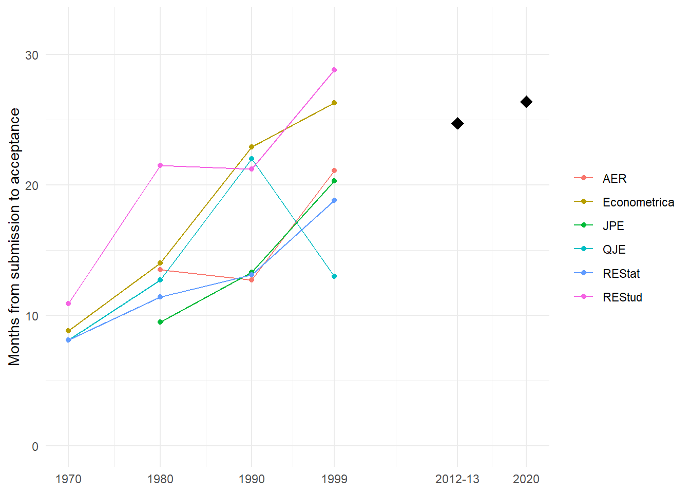
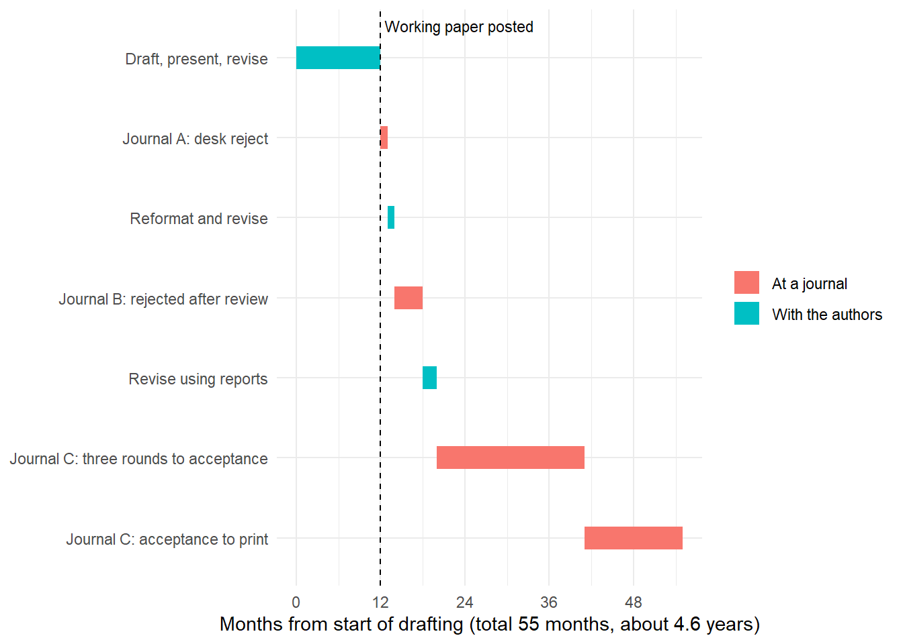

flowchart TD
S[Owner: scholarly<br/>society or university] --> P[Publisher:<br/>production and hosting]
S --> EIC[Editor-in-chief]
EIC --> HE[Handling editors:<br/>coeditors, senior or<br/>department editors]
EIC --> OFF[Editorial office:<br/>logistics and checks]
HE --> AE[Associate editors]
HE --> R[Referees: editorial<br/>board and ad hoc]
AE -.->|report or synthesis| HE
R -.->|reports and<br/>recommendations| HE
HE -.->|decision letter| A[Authors]
77 The Review Process
Peer review is the institution through which a scholarly field decides what counts as knowledge. A manuscript becomes a published contribution only after anonymous experts have judged it interesting, valid, and important enough to add to the record, and the editor has aggregated those judgments into a decision. For the author the process is a gauntlet; for the field it is a screening technology that trades speed for reliability. This chapter treats reviewing from both sides of the desk. It traces how peer review arose, what journals are for, and how the publishing system is organized; it then explains what an editor and a set of reviewers actually do to a submission, how a competent review is structured, and—because reviewing is at bottom a measurement problem—how to think formally about the reliability of the verdicts that emerge. It closes with the data-transparency requirements journals now impose and with the arrival of language models in review. The credibility revolution that produced those requirements, and the integrity record they made visible, are the subject of Chapter 78.
The chapter is also practical. A marketing PhD will referee dozens of papers before ever publishing many, and learning to review well is the fastest route to understanding what separates a strong paper from a rejected one. We therefore move from the motivation for reviewing, to the mechanics of the editorial pipeline, to the anatomy of a good referee report, to a statistical account of reviewer agreement and the noise inherent in the system. Throughout, the standard exemplar is the Journal of Marketing (JM), whose published review policy is unusually explicit; the principles transfer to the rest of the top-tier marketing journals (Chapter 1).1
77.1 A Short History of Peer Review
External peer review is younger than the scientific journal, and much younger than most researchers assume. For most of the history of scientific publishing, the decision to print rested with an editor or a society committee, and written assessments by outside experts were optional. The institution that a modern author encounters, in which every submission to a serious journal is sent to anonymous specialists whose reports shape the decision, became universal only in the second half of the twentieth century.
The first journals. The first issue of the Journal des sçavans appeared in Paris in early January 1665. Henry Oldenburg, secretary of the Royal Society of London, brought a copy to the Society within days and laid the first issue of the Philosophical Transactions before its Council on 1 March 1665 (Fyfe et al. 2022). The Transactions was Oldenburg’s private and partly commercial venture, not an organ of the Society, and he edited 136 issues until his death in 1677. Selection in this period was editorial review in the literal sense: the editor read what correspondents sent and decided what to print.
Institutional control. In 1752 the Royal Society assumed financial and editorial responsibility for the Transactions. A Committee of Papers decided which communications to publish and could call on a fellow skilled in the relevant field for advice (Moxham and Fyfe 2018). Historians therefore often date the beginning of peer review to 1752, although antecedents reach back into the seventeenth century (Kronick 1990).
Written referee reports. The practice of commissioning written reports followed in 1831–1832. Asked for ideas to reform the Society, William Whewell proposed public reports on submitted papers, modeled on the rapporteurs of the Paris Académie des sciences. The first jointly written reports were commissioned in December 1831, and in November 1832 the Society’s president announced that no paper would be printed without a written report of its fitness (Fyfe et al. 2022). The Society’s archive contains a continuous run of referee reports from 1832 onward, although the practice of consulting referees was not itself new (Moxham and Fyfe 2018). Whewell had proposed that the reports be public, but at the Royal Society referees’ identities came to be kept confidential while authors were not anonymous; some journals began to anonymize authors only from the mid-1950s (Fyfe et al. 2022; Moxham and Fyfe 2018).
The twentieth century. Through the nineteenth century and much of the twentieth, external reports remained optional for journals and funding bodies (Baldwin 2018). When the editor of Physical Review sent a 1936 manuscript by Albert Einstein and Nathan Rosen to an anonymous referee, Einstein objected that the paper had been shown to specialists before publication and withdrew it; this was probably his first encounter with anonymous refereeing (Kennefick 2005). Nature made external review a requirement for publication only in 1973 (Baldwin 2015). The phrase “peer review” itself was coined in the early 1970s (Moxham and Fyfe 2018), and the Royal Society did not use it before 1990 (Fyfe et al. 2022). Baldwin (2018) traces the idea that refereeing is what makes science legitimate to the Cold War United States, where, under pressure on public science funding in the 1970s, scientists presented expert review as the guarantee of scientific credibility. Economics followed the same path: by the late twentieth century external refereeing was universal at the discipline’s major journals, and leading economists could document that many papers later regarded as classics had been rejected along the way (Gans and Shepherd 1994).
After the printed journal. Four later developments complete the history and are taken up in the sections that follow. Working papers, first circulated in institutional series and then posted to online repositories, separated the communication of research from its certification (Section 77.2). Author anonymity became a matter of journal policy that fields resolved differently, and economics’ largest society abandoned double-blind review in 2011 before announcing a randomized trial of author anonymization in 2026 (Section 77.6.2). Data editors and data-and-code policies added verification of computational results to the review process (Section 77.12). Most recently, generative artificial intelligence has lowered the cost of producing manuscripts and of checking them, and has put the scarcity of expert attention at the center of the system (Section 77.13.1). Table 77.1 summarizes the milestones.
| Year | Milestone | Source |
|---|---|---|
| 1665 | Journal des sçavans (January) and Philosophical Transactions (March) begin publication; selection by the editor | Fyfe et al. (2022) |
| 1752 | Royal Society takes over the Transactions; a Committee of Papers decides, consulting knowledgeable fellows | Moxham and Fyfe (2018) |
| 1831–1832 | Written referee reports introduced at the Royal Society; no paper printed without a report from 1832 | Fyfe et al. (2022) |
| 1936 | Einstein withdraws a paper from Physical Review after it is sent to an anonymous referee | Kennefick (2005) |
| Mid-1950s | Some journals begin anonymizing authors | Moxham and Fyfe (2018) |
| Early 1970s | The term “peer review” is coined; refereeing presented as the basis of scientific credibility | Moxham and Fyfe (2018); Baldwin (2018) |
| 1973 | Nature requires external review for publication | Baldwin (2015) |
| 1991 | Randomized experiment on double-blind review at the American Economic Review | Blank (1991) |
| 2004 | AEA data availability policy implemented | Vilhuber (2020) |
| 2011 | AEA journals move from double-blind to single-blind review | Jaschik (2011) |
| 2013 | Marketing Science replication and disclosure policy | Desai (2013) |
| 2018–2019 | First AEA Data Editor appointed (January 2018); Management Science data and code policy (June 2019); revised AEA data and code policy (July 2019) | American Economic Association (2019); Management Science (2019) |
| 2025 | AMA journals adopt a common research transparency policy | American Marketing Association (2025) |
| 2026 | AEA announces a three-year randomized trial of author-anonymized review; economists debate AI-assisted review | American Economic Association (2026); Section 77.13.1 |
77.2 What Journals Are For
A journal article performs several functions at once, and the bundle has been coming apart. Ransom (2026a), drawing on John Cochrane, describes journals as bundling three services: communication, credentialing, and archiving. Each has a different economics, and separating them explains much of the current strain on the system.
Communication. For most of the history traced above, the journal was how research reached its readers. In economics and much of business research it no longer is. A paper is typically circulated as a working paper long before it is accepted: for articles published in 2012–2013 in leading economics journals, the median time from first submission to publication was about 35 months (Hadavand, Hamermesh, and Wilson 2021, 2024), and in these fields the working paper, not the article, is what circulates during those years. Working-paper output in economics rose by about a quarter at both arXiv and the NBER between the first eight months of 2025 and of 2026 (Goldsmith-Pinkham 2026a). The communication function has largely moved to preprints.
Certification. What journals still supply, and what working papers cannot, is a credible signal of quality that institutions can use without reading the work. Hiring, tenure, and promotion committees rely on it heavily. Heckman and Moktan (2020) document the dependence in economics: in the working-paper version of their study of tenure-track hires at the top 35 U.S. departments, one publication in the five leading journals raised the rate of receiving tenure by about 80 percent relative to otherwise similar candidates, two by about 230 percent, and three by about 310 percent, and faculty surveyed ranked the number of such publications as the most important factor in tenure decisions (Heckman and Moktan 2018). Business schools use journal lists for the same purpose (Section 77.4). Certification is the function that makes the journal hierarchy matter, and it is the function placed under pressure when the cost of producing manuscripts falls (Section 77.13.1).
Archiving. The published article is the version of record: a permanent, citable, and stable document to which corrections, expressions of concern, and retractions are attached (Section 78.3). Archiving is the least contested of the three functions and, with digital publication, the cheapest to provide.
The reviewer’s role differs across the three. Referees contribute little to communication, which happens before they see the paper, and nothing to archiving. Their labor is almost entirely in the service of certification, which is why the standards in Section 77.10 concern whether a paper meets the journal’s bar rather than how widely it should be read.
77.3 The Publishing System
A journal is known by a single name but is several entities at once: an owner, usually a scholarly society or a university; a publisher that produces and distributes the content under contract; an editorial team appointed for fixed terms; an editorial office that runs the process day to day; and a rotating pool of referees drawn from the field. Table 77.2 describes each, and Figure 77.1 shows how they relate at a typical society journal.
| Actor | Who | What they do |
|---|---|---|
| Journal | The publication venue, identified by its title | Defines a scope, a quality bar, and a review process; accumulates a reputation |
| Owner | A scholarly society (AEA, AMA, INFORMS), a university, or a press | Appoints the editor, sets policy, holds copyright or licenses it |
| Publisher | A university press or commercial publisher, sometimes the society itself | Production, typesetting, distribution, hosting, and the manuscript system |
| Editorial office | Professional staff, usually not research faculty | Logistics: technical checks, plagiarism screening, reminders, correspondence |
| Editor-in-chief | A senior researcher on a fixed term | Sets direction, screens submissions, assigns handling editors, decides appeals |
| Handling editor | Called coeditor, senior editor, department editor, or editor, depending on the journal | Reads the paper, selects referees, and, at most journals, makes the decision |
| Associate editor | A researcher appointed to the board | Advises the handling editor, often by writing a report or synthesizing the referees’ reports |
| Editorial (review) board | Researchers who commit to reviewing regularly | Provide a reliable referee pool and signal the journal’s scope |
| Referee | Ad hoc expert, usually unpaid | Provides written advice on the manuscript |
| Author | Submits the manuscript | Writes the best possible paper and responds to the review |
77.3.1 The Same Title Means Different Jobs
Editorial titles are not standardized, and the same title can carry different decision rights at different journals. At Econometrica the handling co-editor decides and associate editors serve as referees; at Management Science the department editor decides and associate editors advise; at the American Economic Review the editor assigns each paper to a coeditor, who decides. A referee or author who assumes that “associate editor” or “coeditor” means the same thing everywhere will misread a decision letter. Table 77.3 summarizes the structures described on each journal’s official pages.2
| Journal | Who decides | Advisory roles | Notes |
|---|---|---|---|
| American Economic Review | Coeditor assigned by the editor | Referees | A second coeditor is consulted before a first revise-and-resubmit |
| Econometrica | Handling co-editor | Associate editors act as referees | Co-editors also handle appeals |
| Management Science | Department editor chosen by the authors | Associate editors; referees | Authors must name three associate editors and may suggest five reviewers |
| Marketing Science | Senior editor, per the current submission guidelines | Associate editor; referees | An older editorial statement describes the editor-in-chief deciding with the associate editor’s help |
| Journal of Consumer Research | An editor assigned by the editor-in-chief | Associate editor “mediates” the review; referees | Authors may suggest up to three associate editors and five reviewers and may name opposed reviewers |
| Journal of Marketing, Journal of Marketing Research | Editor-in-chief and coeditors; the AMA’s policy states that the editor has final authority | Associate editors; Editorial Review Board | The division of decision rights between the editor-in-chief and coeditors is not documented publicly |
| Strategic Management Journal | Four co-editors lead the journal | Associate editors; Editorial Review Board |
77.3.2 Owners and Publishers
The owner and the publisher are frequently different organizations, and the distinction matters for policy: data and AI policies are set by the owner, the publisher, or both. Among the journals discussed in this book, the American Economic Review is owned and published by the American Economic Association; Econometrica by the Econometric Society, with Wiley as its publisher; the Quarterly Journal of Economics is edited at Harvard and published by Oxford University Press; the Journal of Political Economy by the University of Chicago Press; the Journal of Marketing and Journal of Marketing Research by the American Marketing Association with SAGE Publishing; the Journal of Consumer Research by a nonprofit governed by a policy board of sponsoring associations, with Oxford University Press; Marketing Science and Management Science by INFORMS; and the Strategic Management Journal by the Strategic Management Society in partnership with Wiley. Goldsmith-Pinkham (2026a) found that among the 50 economics journals ranked highest by RePEc, 34 had AI policies only at the publisher level, which illustrates how the layering of owner and publisher shapes the rules an author or referee must follow.
77.4 The Journal Hierarchy
Journals are ranked, informally and formally, and the ranking is hotly contested. Rankings built from opinion surveys and from citations disagree, and the in-house journal lists that business schools use to evaluate faculty differ again from both (Steward and Lewis 2010); citation-based rankings of economics journals shift with the window and method used (Kalaitzidakis, Mamuneas, and Stengos 2003). Because certification is what institutions buy from journals (Section 77.2), the hierarchy has direct career consequences (Heckman and Moktan 2020). The tiers below are a conventional description rather than an authoritative ranking. Only the top five in economics and the UTD list in business are fixed by an identifiable source; the other groupings are indicative and contested.
| Tier | Economics | Marketing and business |
|---|---|---|
| Top | The “top five”: American Economic Review, Econometrica, Journal of Political Economy, Quarterly Journal of Economics, Review of Economic Studies (Card and DellaVigna 2013a; Heckman and Moktan 2020) | The marketing “top four”: Journal of Marketing, Journal of Marketing Research, Journal of Consumer Research, Marketing Science; the leading journals of each business field (Table 77.5) |
| Top general interest | For example, Journal of the European Economic Association, Review of Economics and Statistics, Economic Journal, AER: Insights, the four American Economic Journals | Management Science, which publishes across business disciplines |
| Top field | For example, Journal of Econometrics, Journal of Economic Theory, Journal of Monetary Economics, Journal of Public Economics, Journal of Development Economics, Journal of Labor Economics, RAND Journal of Economics | Field leaders in adjacent disciplines that publish marketing work, for example Journal of Finance, Strategic Management Journal, Information Systems Research |
| Strong field and general | Respected general and field journals below the leading tier | For example, Journal of the Academy of Marketing Science, International Journal of Research in Marketing, Journal of Retailing, Journal of Consumer Psychology, Quantitative Marketing and Economics, Journal of Public Policy & Marketing |
| Specialized and other | Subfield and regional journals | Subfield journals (advertising, services, product innovation, international marketing, and others) and regional journals |
The most widely used list of leading business journals across fields is the 24-journal list that the University of Texas at Dallas uses for its research rankings of business schools (Naveen Jindal School of Management, The University of Texas at Dallas 2026), reproduced in Table 77.5. Business schools frequently adopt it, or a variant, as a target list.
| Field | Journals on the UTD list |
|---|---|
| Accounting | The Accounting Review; Journal of Accounting and Economics; Journal of Accounting Research |
| Finance | Journal of Finance; Journal of Financial Economics; The Review of Financial Studies |
| Information systems | Information Systems Research; INFORMS Journal on Computing; MIS Quarterly |
| Marketing | Journal of Consumer Research; Journal of Marketing; Journal of Marketing Research; Marketing Science |
| Operations and management science | Management Science; Operations Research; Journal of Operations Management; Manufacturing & Service Operations Management; Production and Operations Management |
| Management and strategy | Academy of Management Journal; Academy of Management Review; Administrative Science Quarterly; Organization Science; Journal of International Business Studies; Strategic Management Journal |
77.5 Why Review
Refereeing is unpaid, anonymous, and invisible on a CV unless deliberately documented. Scholars nonetheless review for three self-interested reasons that align neatly with the field’s interest. The first is reciprocity: peer review is a commons. Every author consumes referee labor and is expected to supply it, and a field that under-supplies reviewing degrades the screening quality of every journal in it. The second is proximity to the frontier: a referee reads work months or years before it appears in print, and reviewing for a strong journal is the cheapest subscription to the research frontier that exists. The third is calibration: nothing teaches the difference between a publishable and an unpublishable paper faster than being forced to articulate, in writing and under an editor’s scrutiny, why a specific manuscript falls on one side of that line. The skills that make a good reviewer—identifying the contribution, stress-testing identification, separating fatal flaws from fixable ones—are exactly the skills that make a good author.
Because the labor is invisible, it must be made visible to count. Reviewing activity can be logged on services that verify referee reports with journals (for example by forwarding the journal’s acknowledgment email to a verification address), producing a citable record for promotion files and annual reviews. The mechanism matters less than the discipline of recording the work; an unrecorded review is a contribution the tenure committee never sees.
77.6 The Editorial Pipeline
A submission does not go straight to reviewers. It passes through a sequence of gates, each of which can terminate the process, and understanding that sequence demystifies both the long latencies authors experience and the points at which a paper is most likely to die. Figure 77.2 traces the path from submission to decision.
flowchart TD
A[Author submits] --> B{Plagiarism &<br/>duplicate check}
B -->|fail| X[Returned to author]
B -->|pass| C{Editor screens<br/>for suitability}
C -->|unsuitable| D[Desk reject]
C -->|suitable| E[Assign area /<br/>associate editor]
E --> F[AE assigns<br/>2-3 reviewers]
F --> G[Reviewers submit<br/>independent reports]
G --> H[AE synthesizes<br/>recommendation]
H --> I{Editor decision}
I -->|reject| J[Reject]
I -->|major/minor| K[Revise &<br/>resubmit]
I -->|accept| L[Accept]
K --> M[Author revises] --> F
The first two gates are administrative. Submissions are screened by software for plagiarism and for duplicate or concurrent submission, the latter being a serious ethical violation because it wastes scarce referee capacity across journals. A manuscript that clears these is read by the editor (or editor-in-chief) for suitability: is the topic in scope, is the contribution plausibly large enough, is the execution credible on its face? A large share of submissions never survive this gate—they are desk-rejected without external review—which is efficient for the system but is the single most common author experience at selective journals.
A suitable paper is assigned to an area editor or associate editor (AE), a domain specialist who owns the manuscript through the rest of the process. The AE selects two or three reviewers. Reviewer selection is not random: candidates are drawn from the paper’s own reference list (authors of cited work are, by construction, close to the topic), from the author’s suggested-reviewer list, from the AE’s personal knowledge of the subfield, from candidates who declined earlier invitations and suggested alternatives, from web search, and from the publisher’s reviewer database. This selection mechanism has a consequence worth stating plainly: reviewers are chosen for topical proximity, not for statistical representativeness, so the pool of opinions an author receives is a convenience sample of nearby experts, not a random draw from the field.
Reviewers return independent written reports, and the AE synthesizes them into a single recommendation for the editor. Synthesis is not vote counting. A paper is not rejected because two of three reviewers were negative; it is rejected because the AE and editor, reading the reports as arguments, judge the objections dispositive. We return to why vote counting is the wrong aggregation rule in Section 77.11.
77.6.1 How Referees Are Chosen
Editors draw referees from a small number of sources: authors whose work the manuscript cites, specialists in the paper’s method or data, members of the editorial board, and colleagues whose judgment the editor knows. The last two sources matter more than authors might expect. In Hamermesh’s sample of referee requests at seven economics journals, nearly a third of the referees had recently published in the journal they were refereeing for, and editors relied noticeably on colleagues in their own departments (Hamermesh 1994). Referees were also disproportionately senior and highly cited: the mean referee was 16 years past the doctorate.
Many journals let authors shape the pool. Management Science requires authors to name three associate editors and allows them to suggest five reviewers; the Journal of Consumer Research allows authors to suggest up to three associate editors and five reviewers and to identify reviewers they oppose; Marketing Science asks for a preferred senior editor, three preferred reviewers, and two preferred associate editors.3 Suggestions are advisory; the editor remains free to choose referees from any source.
77.6.2 Blinding
Review models differ in who knows whose identity. Under single-blind review the referee knows the authors but the authors do not know the referee; under double-blind (now usually called double-anonymous) review neither knows the other; under open review both identities are known. Referee anonymity became the norm at the Royal Society in the nineteenth century, whereas author anonymity is a twentieth-century innovation (Moxham and Fyfe 2018).
Economics provides the best-known experiment and the clearest reversal. In a randomized experiment at the American Economic Review in the late 1980s, double-blind review produced lower acceptance rates and more critical referee reports; the effect did not differ significantly between female and male authors, and it was concentrated among authors at near-top-ranked universities and non-academic institutions (Blank 1991). Two decades later the AEA moved its journals to single-blind review, effective July 2011, on the grounds that search engines made author anonymity increasingly ineffective and that anonymization raised administrative costs and made it harder for referees to spot conflicts of interest (Jaschik 2011). In September 2026 the AEA announced a three-year randomized trial of author-anonymized review across the American Economic Review, AER: Insights, and the four American Economic Journals, citing concerns about the perceived unfairness of single-blind review (American Economic Association 2026). The evidence in Table 77.14 that prominence affects evaluations (Tomkins, Zhang, and Heavlin 2017; Huber et al. 2022) is the backdrop to that trial.
Marketing and most of business use double-anonymous review. Table 77.6 records the policies stated on the journals’ official pages.
| Journal | Review model (official description) |
|---|---|
| Journal of Marketing, Journal of Marketing Research (all AMA journals) | Double-anonymous |
| Journal of Consumer Research | Double-anonymized |
| Marketing Science; Management Science | Double-anonymous |
| Strategic Management Journal | Double-blind |
| Journal of Finance | Single-blind |
| AEA journals (AER, AER: Insights, AEJs) | Single-blind since 2011; randomized trial of author anonymization announced September 2026 |
Double-anonymous review has a practical limit that the AEA’s 2011 decision identified: when working papers are posted publicly, a referee who wishes to learn the authors’ identities usually can. The policy therefore works mainly by norm. A referee at a double-anonymous journal should not search for the authors and should disclose to the editor if the authors’ identity becomes known.
77.6.3 Payment and Deadlines
Refereeing is almost always unpaid. The exceptions are small and concentrated in economics and finance: the American Finance Association pays an honorarium of $250 for timely, high-quality reports to the Journal of Finance; the Journal of Financial Economics has used part of its submission fee for tokens of appreciation to reviewers who deliver quality reports on time; and the Journal of Political Economy waives its submission fee for authors who have written three or more reports for it in the previous year.4 Experimental evidence shows that even small payments speed reports: a $100 payment for meeting a four-week deadline shortened median review times at the Journal of Public Economics by about eight days beyond the effect of the shorter deadline itself (Chetty, Saez, and Sándor 2014).
Requested deadlines range from about two to eight weeks. The Journal of Public Economics allowed 45 days before the Chetty–Saez–Sándor experiment, an American Economic Journal invitation reproduced by Ransom (2026b) asks for a report within five weeks, and the Journal of Marketing’s norm, described below, is about three weeks. Observed times are close to these targets for most referees: across fields, the median reviewer completes a report about 16 days after accepting the invitation (Publons 2018), and in Hamermesh’s economics sample half of the reports that were eventually received arrived within six weeks and three-quarters within ten (Hamermesh 1994).
77.6.4 The Scale of Refereeing Work
The aggregate burden is large and unevenly distributed. Aczel, Szaszi, and Holcombe (2021) estimate that peer review across all fields consumed about 131 million hours in 2020, assuming six hours per review, and that the average reviewer completes about 4.7 reviews a year. Survey data put the median time spent writing a review at five hours, and indicate that about 10 percent of reviewers perform about half of all reviews (Publons 2018). Recruiting referees has become harder: editors needed 2.4 invitations per completed review in 2017, up from 1.9 in 2013 (Publons 2018).
The load varies over a career. Requests rise as a researcher becomes known and cited and decline after mid-career; in one economics department Hamermesh found the number of papers refereed peaked about 16 years after the doctorate, and heavily cited faculty refereed several times as many papers as the department’s average (Hamermesh 1994). One economist’s account gives a sense of the individual scale: about 175 referee reports written to date and 50 to 60 hours a year spent refereeing, roughly 3 to 4 percent of working time (Ransom 2026a). Invitations are therefore few early in a career and numerous for established scholars, whose most important refereeing skill may be declining promptly (Section 77.10).
77.6.5 Decisions and Turnaround
The editor’s decision falls into a small set of categories. An outright reject ends the relationship with the journal. An accept is rare on a first round. The common non-terminal outcome is a revise and resubmit (R&R), of which two flavors must be distinguished because authors routinely confuse them.
| Outcome | Treated as | Returns to | Author expectation |
|---|---|---|---|
| Accept | Final | Production | Rare on round 1 |
| Reject | Final | — | Most common at selective journals |
| Revise & resubmit (revise) | Continuation | Same reviewers | Address numbered points; reasonable odds |
| Reject & resubmit | New submission | New reviewers | Fresh clock, fresh referees, no continuity |
The distinction in Table 77.7 is consequential. A revise-and-resubmit returns to the same reviewers, who will check whether their numbered concerns were addressed; continuity of referees rewards a disciplined, point-by-point response. A reject-and-resubmit is administratively a new paper—it resets the clock and is sent to a new set of reviewers—so the prior reports are guidance, not a binding contract, and the author cannot assume the new panel shares the old panel’s priorities. Turnaround norms at top journals target roughly three weeks for a reviewer to return a report after accepting the invitation and on the order of two weeks for the AE to synthesize, with the full first round commonly completing within about three months. Critically, an invited reviewer should decline promptly if unable to serve: a slow non-answer is more damaging to an author than a fast decline, because it delays reassignment.
77.6.6 Who Does What
Each party to the process has a distinct job, and most failures of the process are failures of one party to do its own job or attempts to do another’s.
- The author’s job is to submit the best paper the author can write and, after a revise-and-resubmit, to write a thoughtful response that addresses every required point and explains, with reasons, any suggestion the authors decline.
- The referee’s job is to give the editor impartial, concise, expert advice. The referee works for the editor, not for the authors and not for the referee’s own research program (Section 77.10).
- The editor’s job is to decide (Berk, Harvey, and Hirshleifer 2017), to explain the decision, and, when inviting a revision, to give the authors a clear direction: which referee requests are binding, which are optional, and where the referees disagree, which view the editor shares. Editors also exercise taste, the judgment about what the journal should publish that no individual report can supply.
The vocabulary of recommendations is similar across journals, though the labels vary: reject, major revision, minor revision, and accept, with “revise and resubmit” used for any invitation to revise. Some journals use finer scales. The four economics journals studied by Card and DellaVigna (2020) ask referees to choose among seven categories, from “definitely reject” to “accept”. Their data show how severe referees are. Across about 30,000 submissions, two-thirds of all recommendations were reject or definitely reject, and fewer than one in five were revise and resubmit or better (Table 77.8). Editors followed the referees closely: a paper with two “reject” recommendations almost never received a revise-and-resubmit, one with two “weak R&R” recommendations did about a quarter of the time, and one with two “R&R” recommendations did at least 80 percent of the time.
| Recommendation | Share of referee recommendations (%) |
|---|---|
| Definitely reject | 12 |
| Reject | 54 |
| No recommendation | 6 |
| Weak revise and resubmit | 10 |
| Revise and resubmit | 10 |
| Strong revise and resubmit | 4 |
| Accept | 3 |
77.6.7 A Stylized Funnel at a Top Journal
Table 77.9 converts the same data into a funnel per 100 submissions. At the most selective journal in the sample, the Quarterly Journal of Economics, 60 of every 100 submissions were desk-rejected and 4 received a revise-and-resubmit. Across the four journals, 42 were desk-rejected, 58 went to referees, and 8 received a revise-and-resubmit. Final outcomes were observed only for two journals, where papers that received a revise-and-resubmit were eventually published about 75 percent (REStud) to 90 percent (JEEA) of the time (Card and DellaVigna 2020). Applying those rates to the pooled funnel implies that roughly 6 or 7 of every 100 submissions are eventually published, consistent with the acceptance rate of about 6 percent at the top five (Card and DellaVigna 2013a). The last step is this chapter’s arithmetic, not a figure reported in the sources.
| Per 100 submissions | All four | QJE | REStat | JEEA | REStud |
|---|---|---|---|---|---|
| Desk-rejected | 42 | 60 | 54 | 24 | 20 |
| Sent to referees | 58 | 40 | 46 | 76 | 80 |
| Revise and resubmit | 8 | 4 | 12 | 11 | 8 |
Comparable funnels for marketing journals are not publicly available at this level of detail. The orders of magnitude are similar at the top of every business field: most submissions are rejected, a large share without external review, and a revise-and-resubmit, rather than acceptance, is the outcome that matters after the first round.
77.6.8 The Timeline Inside One Journal
The time a paper spends at a single journal is measured in years at the top of economics and business. Table 77.10 assembles the components from the sources above. The most detailed recent evidence comes from Hadavand, Hamermesh, and Wilson (2024), whose working paper reports that for articles published in 2012–2013 in four of the top five economics journals and the Review of Economics and Statistics, the mean time from first submission to acceptance was about 25 months (median 21; 10th and 90th percentiles 10 and 42 months) and the mean time to publication about 33 months (median 35). For papers published in 2020 the median times were 22 and 32 months. The same paper’s comparisons are striking: in the other social sciences the mean time to acceptance was about 13 months, and at Nature and PNAS about 6 months (Hadavand, Hamermesh, and Wilson 2021). A broader cross-field study finds the same ordering, with business and economics journals taking about 18 months from submission to publication, twice as long as chemistry (Björk and Solomon 2013).
| Stage | Typical duration | Source |
|---|---|---|
| Administrative check and editor’s screening | Shortest stage; desk rejection ends the process without referees | — |
| Referee reports, first round | Requested deadlines of 2–8 weeks; median report 16 days after accepting; half of eventual reports within 6 weeks | Publons (2018); Hamermesh (1994) |
| First decision | After the slowest required report and the editor’s reading; the full first round commonly takes several months | Hamermesh (1994) |
| Revision by authors | About 10 months in authors’ hands over the life of the median paper; much longer in the slow tail | Hadavand, Hamermesh, and Wilson (2021) |
| Later rounds | The median paper is accepted on its third submission (two revisions); 22 percent need four | Hadavand, Hamermesh, and Wilson (2021) |
| Submission to acceptance | Median 21 months (2012–2013), 22 months (2020) | Hadavand, Hamermesh, and Wilson (2021) |
| Acceptance to print | About a year between the medians to acceptance and to publication | Hadavand, Hamermesh, and Wilson (2021) |
Two findings in the Hadavand–Hamermesh–Wilson data change how the timeline should be read. First, authors account for much of it. For the median paper, about as much time is spent in the authors’ hands, revising, as at the journal; in the slowest tenth, authors held the paper for 26 months and the journal for 18, and over half of the variance in time to acceptance is attributable to authors (Hadavand, Hamermesh, and Wilson 2021). Second, the long times are the result of a gradual slowdown. Figure 77.3 plots the mean time from submission to acceptance at six leading economics journals between 1970 and 1999 from Ellison (2002b), with the pooled means for 2012–2013 and 2020 from Hadavand, Hamermesh, and Wilson (2021). Ellison attributed most of the increase to more rounds of revision rather than to slower referees.
Code
library(ggplot2)
# Ellison (2002), Table 1: mean months from submission to acceptance.
ellison <- data.frame(
journal = rep(c("AER", "Econometrica", "JPE", "QJE", "REStud", "REStat"), each = 4),
year = rep(c(1970, 1980, 1990, 1999), times = 6),
months = c(NA, 13.5, 12.7, 21.1,
8.8, 14.0, 22.9, 26.3,
NA, 9.5, 13.3, 20.3,
8.1, 12.7, 22.0, 13.0,
10.9, 21.5, 21.2, 28.8,
8.1, 11.4, 13.1, 18.8)
)
# Hadavand, Hamermesh & Wilson (NBER WP 29147), Table 1: pooled means.
recent <- data.frame(year = c(2012.5, 2020), months = c(24.72, 26.38))
ggplot(subset(ellison, !is.na(months)), aes(year, months, colour = journal)) +
geom_line() +
geom_point() +
geom_point(data = recent, aes(year, months), inherit.aes = FALSE,
shape = 18, size = 4) +
scale_x_continuous(breaks = c(1970, 1980, 1990, 1999, 2012.5, 2020),
labels = c("1970", "1980", "1990", "1999", "2012-13", "2020")) +
expand_limits(y = c(0, 32)) +
labs(x = NULL, y = "Months from submission to acceptance", colour = NULL) +
theme_minimal()
77.6.9 The Life Cycle of a Paper Across Journals
Because most submissions are rejected, a typical paper passes through several journals, usually moving down the hierarchy in Table 77.4, before it is accepted. The elapsed time from first draft to print is the sum of the time at each journal, the time spent revising between submissions, and the time before the first submission. Figure 77.4 illustrates one such path. It is a stylized example constructed for this chapter: the durations at the final journal are the 2012–2013 medians from Hadavand, Hamermesh, and Wilson (2021), and the other durations are assumptions chosen to be plausible, not estimates.
Code
library(ggplot2)
stages <- data.frame(
stage = c("Draft, present, revise", "Journal A: desk reject", "Reformat and revise",
"Journal B: rejected after review", "Revise using reports",
"Journal C: three rounds to acceptance", "Journal C: acceptance to print"),
months = c(12, 1, 1, 4, 2, 21, 14), # assumptions except the two Journal C values
status = c("With the authors", "At a journal", "With the authors", "At a journal",
"With the authors", "At a journal", "At a journal")
)
stages$end <- cumsum(stages$months)
stages$start <- stages$end - stages$months
stages$stage <- factor(stages$stage, levels = rev(stages$stage))
ggplot(stages, aes(y = stage)) +
geom_segment(aes(x = start, xend = end, yend = stage, colour = status), linewidth = 6) +
geom_vline(xintercept = 12, linetype = "dashed") +
annotate("text", x = 12.5, y = 7.4, hjust = 0, size = 3,
label = "Working paper posted") +
scale_x_continuous(breaks = seq(0, 60, 12)) +
labs(x = sprintf("Months from start of drafting (total %d months, about %.1f years)",
max(stages$end), max(stages$end) / 12),
y = NULL, colour = NULL) +
theme_minimal()
The illustrated path takes about four and a half years from the start of drafting to print, of which roughly three and a half fall after the working paper is public. Readers of the field therefore encounter most papers as working papers, which is why the communication function has migrated to preprints (Section 77.2), while the certification that hiring and tenure committees require arrives years later.
77.6.10 Fifty Years of Change at the Top
Table 77.11 collects the long-run trends at the top five economics journals, the setting for which the best historical data exist. Submissions roughly doubled while the number of articles published fell, so the acceptance rate fell from about 15 percent to about 6 percent. Articles became nearly three times as long and gained coauthors, and the time from submission to acceptance rose from well under a year to about two years (Card and DellaVigna 2013a; Ellison 2002b; Hadavand, Hamermesh, and Wilson 2024).
| Indicator | Earlier | Recent | Source |
|---|---|---|---|
| Submissions per year, top five combined | 2,874 (1990) | 5,407 (2011) | Card and DellaVigna (2013b) |
| Articles published per year, top five | 398 (1976–1980 average) | 307 (2011–2012) | Card and DellaVigna (2013b) |
| Acceptance rate | About 15% (c. 1980) | About 6% (2011–2012) | Card and DellaVigna (2013a) |
| Acceptance rate, Econometrica | 27.1% (1976–1980) | 8.5% (2011–2012) | Card and DellaVigna (2013b) |
| Acceptance rate, QJE | 10.9% (early 1970s) | 3.5% (2011–2012) | Card and DellaVigna (2013b) |
| Share of top-five articles in the AER | About 25% (late 1970s) | About 40% (2011–2012) | Card and DellaVigna (2013a) |
| Standardized pages per article | 16 (early 1970s) | 45.5 (2011–2012) | Card and DellaVigna (2013b) |
| Authors per article | 1.3 (early 1970s) | 2.2 (2011–2012) | Card and DellaVigna (2013b) |
| Mean revisions before acceptance, QJE | 1.2 (1970) | 2.0 (1997) | Ellison (2002b) |
| Submission to acceptance | 6–9 months (c. 1970) | About 2 years (late 1990s); median 21–22 months (2012–2013, 2020) | Ellison (2002b); Hadavand, Hamermesh, and Wilson (2021) |
| Submission to publication | — | Median 35 months (2012–2013), 32 months (2020) | Hadavand, Hamermesh, and Wilson (2021) |
77.7 What a Manuscript Must Deliver
Before turning to how a review is written, it helps to fix the bar a manuscript is held to. The published criteria at JM reduce to three properties a publishable article must simultaneously possess.
A publishable article offers new knowledge, addresses real-world marketing topics and problems of relevance to identifiable stakeholders, and exhibits validity—a good approximation of the truth.
These three—novelty, relevance, validity—are not independently sufficient. A methodologically flawless paper that tells the field nothing new fails on novelty; a novel and rigorous paper about a phenomenon no stakeholder cares about fails on relevance; a novel and important paper whose inference does not survive scrutiny fails on validity, which is usually fatal because validity, unlike novelty or relevance, cannot be repaired by reframing. Much of what a reviewer does is to locate which of these three a paper is weakest on and judge whether the weakness is fixable within a revision cycle.
77.8 The Process Reviewers Are Held To
The author is not the only party under evaluation; the review itself is held to standards, and an AE who receives a careless or unfair report will discount it. Table 77.12 collects the properties a competent review must satisfy. These are obligations on the referee, not on the manuscript.
| Standard | What it requires of the reviewer |
|---|---|
| Fairness | Judge the paper the authors wrote, against its stated objective |
| Competence | Possess reasonable domain knowledge for the claims at issue |
| Independence | Disclose and recuse on conflicts of interest |
| Consistency | Weigh interest, empirical rigor, conceptual rigor, relevance, constructiveness, and tolerance for risk |
| Non-vote-counting | Supply arguments, not a verdict count, for the AE to weigh |
| Responsibility | Respect the original objective, explain fatal flaws explicitly, preserve confidentiality |
| Timeliness | Reviewers ~3 weeks post-acceptance; AEs ~2 weeks to synthesize |
| Roadmap | Tell the author what a successful revision would look like |
Two of these deserve emphasis because they are the most often violated. Consistency means a reviewer should reward risk-taking: a paper that attempts something hard and important and partly succeeds can be a larger contribution than a paper that executes a small, safe question flawlessly, and a review that mechanically penalizes ambition starves the field of its most valuable submissions. Responsibility means that when a reviewer believes a flaw is fatal, the report must explain why, in enough detail that the author understands the objection rather than merely the verdict; an unexplained rejection is a failure of the reviewer, not a service to the field. The combination of these standards with a roadmap—an explicit statement of what a successful revision would contain—is what converts a review from a judgment into a constructive instrument.
77.9 Anatomy of a Referee Report
A good report is short, numbered, and organized so the AE can extract a recommendation and the author can extract a to-do list. The conventional length is about two single-spaced pages, and comments are numbered so that author and editor can reference them precisely in correspondence. Figure 77.5 shows the canonical structure, which mirrors the three-paragraph template many editors recommend: contextualize, evaluate, then enumerate issues.
flowchart LR
A[Synopsis<br/>of paper &<br/>findings] --> B[Contribution<br/>assessment]
B --> C[Major comments<br/>conceptual /<br/>empirical]
C --> D[Readability]
D --> E[Minor comments<br/>numbered]
The opening paragraph contextualizes the research, conveys the key message of the paper in the reviewer’s own words, and notes what was done well. Restating the paper’s thesis is not a courtesy; it lets the author and editor verify that the reviewer understood the contribution before critiquing it, and a reviewer who cannot summarize the paper accurately has forfeited the authority to reject it. The middle of the report evaluates the work along the dimensions the field cares about: is the paper well written, interesting, and important; are the methods, data, and design appropriate; and—the decisive empirical question—does the data support the findings? The body then enumerates issues, and the most useful reports separate the major comments (factual errors, invalid arguments, identification problems, claims unsupported by the evidence) from minor ones (exposition, length relative to the journal’s norms, missing references), and pair each major objection with a path to improvement wherever one exists.
The distinction between major and minor is not cosmetic. An AE reading three reports needs to know which objections are dispositive and which are polish, and a report that buries a fatal identification problem in a list of typographical corrections has failed to communicate its own conclusion. The closing of a strong report is the roadmap from Table 77.12: a concrete statement of what the authors would have to demonstrate for the reviewer to change a negative recommendation to a positive one. Section 77.10 develops each of these elements in full.
77.10 Refereeing a Paper
The preceding sections describe the report as an object. This section treats refereeing as a task: a sequence of decisions that begins when an invitation arrives and ends, often more than a year later, when a revised manuscript is accepted or rejected. The treatment draws principally on the guidance that Berk, Harvey, and Hirshleifer (2017) distilled from correspondence with former editors of the American Economic Review, the Journal of Political Economy, the Quarterly Journal of Economics, Econometrica, the Review of Economic Studies, and the Journal of Financial Economics, together with their longer working-paper guide (Berk, Harvey, and Hirshleifer 2015) and a recent teaching adaptation of both (Ransom 2026b). Those sources come from economics and finance. The principles transfer to marketing without modification, and where marketing practice differs the difference is noted. The prescriptions are then tied to the empirical literature on how referees actually behave, because several of the most important rules exist to counteract documented failure modes rather than as matters of taste.
77.10.1 The Division of Labor
The referee is an expert adviser. The referee does not make the publication decision; the editor does, and the editor communicates it to the authors. The invitation letter at most journals says as much: the editor requests the referee’s advice on a manuscript. Three consequences follow from this division of labor, and most of the guidance in this section is an elaboration of one of them.
First, the report must be useful to a decision-maker who is frequently not a specialist in the paper’s subfield. An assertion that a paper is unimportant, or that its results are wrong, is informative to such an editor only when it is accompanied by an argument the editor can evaluate.
Second, every comment in a report belongs to one of three categories, and the referee must say which (Berk, Harvey, and Hirshleifer 2017; Ransom 2026b). Table 77.13 sets them out. The first category contains requirements: problems that render the paper unpublishable in its current form and that must be resolved before the referee would recommend acceptance. These are advice to the editor. The second contains suggestions: changes that would improve the paper but do not bear on whether it is publishable. These are advice to the authors, and the authors are free to decline them. The third category is empty by construction. It consists of demands that do not affect publishability but are nonetheless presented as conditions of acceptance, and a referee should not make them.
| Category | Content | Addressed to | Burden of justification | Binding on a revision? |
|---|---|---|---|---|
| Requirement | A problem that makes the paper unpublishable now but is correctable | Editor (and authors) | A scientifically convincing argument | Yes: if resolved, the referee should recommend publication |
| Ground for rejection | A problem unlikely to be correctable within one round, or an insufficient contribution | Editor | A scientifically convincing argument | Not applicable |
| Suggestion | An improvement or extension that does not affect publishability | Authors | None beyond a brief rationale | No: authors may decline without penalty |
| Out of bounds | A demand presented as required although it does not affect publishability | — | — | Should not be made |
Third, the authors own the paper. Where reasonable scholars could disagree about exposition, emphasis, or the inclusion of secondary analyses, the decision rests with the authors, whose names appear on the article (Berk, Harvey, and Hirshleifer 2017). The referee is neither a coauthor who rewrites the paper, nor a research director who steers an unpublishable paper toward publishability over several rounds, nor an enforcer who ensures that the referee’s own work is cited (Ransom 2026b). Bedeian (2004), writing about management journals, frames the same point as the preservation of the authorial voice against the accumulated preferences of referees and editors.
77.10.2 What Is Known About Refereeing
The rules of good refereeing would be matters of etiquette if referees were reliable instruments. The empirical literature shows that they are not. Table 77.14 summarizes the studies that bear most directly on the referee’s task; broader surveys are available in Bornmann (2011) and, for the specific question of bias, Lee et al. (2013).
| Study | Setting | Principal finding |
|---|---|---|
| Peters and Ceci (1982) | 12 published psychology articles resubmitted to the same journals under fictitious names and institutions | Only 3 of 38 editors and reviewers recognized the resubmissions; 8 of the 9 remaining articles were rejected, often for “serious methodological flaws” |
| Mahoney (1977) | Referees received manuscripts with identical methods and differing results | Evaluations of the same methods depended on whether the results agreed with the referee’s theoretical orientation |
| Cicchetti (1991) | Cross-disciplinary review of reliability studies | Agreement among referees is low; in diffuse fields referees agree more on what to reject than on what to accept |
| Bornmann, Mutz, and Daniel (2010) | Meta-analysis of 48 studies covering 19,443 manuscripts | Mean intraclass correlation of 0.34 and mean Cohen’s \(\kappa\) of 0.17 between referees of the same manuscript |
| Welch (2014) | Eight economics and finance journals and a finance conference | The referee-specific component of a recommendation was about twice as important as the component common to all referees of a paper |
| Pier et al. (2018) | 43 reviewers rating the same 25 NIH grant applications | No agreement on quality, and no agreement on how a given set of strengths and weaknesses translates into a score |
| Godlee, Gale, and Martyn (1998) | Randomized trial with 420 BMJ reviewers; 8 weaknesses inserted into an accepted paper | Respondents identified on average 2 of the 8; blinding reviewers or requiring signed reports did not change detection |
| Schroter et al. (2008) | Randomized trial with 607 BMJ reviewers; 9 major errors inserted into each of three papers | Reviewers found on average 2.58 major errors at baseline; short training courses had only small effects |
| Hamermesh (1994) | 343 referee requests at seven economics journals, 1989–1990 | 78 percent of referees completed reports, 17 percent declined, and 5 percent never responded; the nonresponders accounted for half of the papers held more than five months |
| Laband (1990) | Editorial correspondence matched to later citations | Referee comments were associated with higher later citations; editors’ comments were not |
| Chetty, Saez, and Sándor (2014) | Randomized experiment with about 1,500 referees at the Journal of Public Economics | Shortening the deadline from six to four weeks cut median review time from 48 to 36 days; a $100 payment cut a further 8 days; report quality was essentially unaffected |
| Card and DellaVigna (2020) | Anonymized submissions to four leading economics journals matched to citations | Referee recommendations strongly predict later citations, and editors follow them closely |
| Tomkins, Zhang, and Heavlin (2017) | Controlled comparison of single- and double-blind reviewers at a computer-science conference | Single-blind reviewers were more likely to recommend papers by famous authors and from top universities and companies (odds multipliers 1.63, 1.58, 2.10) |
| Huber et al. (2022) | The same paper sent to many reviewers under a Nobel laureate’s name, a junior coauthor’s name, or no name | More than 20 percent recommended acceptance when the laureate was named; fewer than 2 percent when the junior author was named |
| Teplitskiy et al. (2018) | Reviews of 7,981 neuroscience manuscripts at PLOS ONE | Reviewers favored authors close to them in the coauthorship network by about 0.11 points on a 1–4 scale per step of proximity |
| Card et al. (2020); Squazzoni et al. (2021) | Four economics journals; 145 journals across fields | Referee gender did not change relative assessments of female- and male-authored papers; whether the system as a whole holds female authors to a different bar depends on the benchmark (see text) |
| Siler, Lee, and Bero (2015) | 1,008 manuscripts submitted to three elite medical journals | Reviewer scores predicted later citations on average, yet the journals rejected the 14 most-cited manuscripts, 12 of them at the desk |
Four conclusions follow from the table, and each motivates a rule developed below. The first is that referee judgments are noisy. The low reliability documented by Cicchetti (1991), Bornmann, Mutz, and Daniel (2010), and Welch (2014) is the empirical counterpart of the rater-effect terms in the measurement model of Section 77.11. Berk, Harvey, and Hirshleifer (2017) add that recommendations at a major finance conference were correlated at only 0.28, and Gilliland and Cortina (1997) report similar disagreement for submissions to the Journal of Applied Psychology. A referee who knows this will state recommendations with appropriate humility and support them with arguments that the editor can weigh independently of the verdict.
The second is that referees miss most errors. In both BMJ trials, the typical reviewer found fewer than one-third of the major problems deliberately planted in a paper (Godlee, Gale, and Martyn 1998; Schroter et al. 2008). Unstructured reading is therefore an unreliable method of verification, which motivates the structured reading protocol below.
The third is that referee judgments are not independent of who wrote the paper or what it found. Prominence (Tomkins, Zhang, and Heavlin 2017; Huber et al. 2022), network proximity (Teplitskiy et al. 2018), and agreement with the referee’s prior views (Mahoney 1977) all move evaluations of identical work. The evidence on gender is more nuanced and depends on the benchmark. Card et al. (2020) find that male and female referees assess female-authored papers similarly relative to male-authored papers, but that female-authored papers receive about 25 percent more citations than observably similar male-authored papers holding referee evaluations fixed; on a citation benchmark, the system as a whole sets a higher bar for female authors. Squazzoni et al. (2021), comparing outcomes directly across 145 journals, find that manuscripts with female authors were treated, if anything, more favorably. A referee cannot resolve this debate but can take the mechanism seriously: evaluations should rest on the content of the manuscript, assessed against criteria fixed before the referee forms a view of the authors.
The fourth is that referees do add value and that delays are concentrated. Referee comments predict later citations (Laband 1990), and editors rely on referee recommendations because they carry information (Card and DellaVigna 2020). Most referees respond quickly; the long delays that authors experience come disproportionately from a small group who accept an assignment and then neither report nor withdraw (Hamermesh 1994). Simple policies such as shorter deadlines shorten review times without reducing report quality (Chetty, Saez, and Sándor 2014). The aggregate slowdown of publication in economics is attributed mainly to more extensive revision demands rather than to slower referees (Ellison 2002b), and Hadavand, Hamermesh, and Wilson (2024) find that much of the remaining lag reflects the time authors take to revise. The referee’s leverage over total delay therefore lies less in the speed of the first report than in the scope of what the report requires.
77.10.3 Before Accepting the Invitation
An invitation typically contains the title, the abstract, and often the manuscript, a requested deadline, and a request to disclose conflicts of interest. The referee should decide promptly. An invitation declined within a day or two, with suggestions of alternative referees, costs the author almost nothing; an invitation accepted and then neglected can hold a paper for months (Hamermesh 1994; Berk, Harvey, and Hirshleifer 2017). Figure 77.6 lays out the questions to resolve before accepting.
flowchart TD
A[Invitation arrives] --> B{Conflict of<br/>interest?}
B -->|yes| B1[Disclose to editor,<br/>who decides]
B -->|no| C{Competent to<br/>judge the paper?}
C -->|no| C1[Decline and suggest<br/>better-matched referees]
C -->|partly| C2[Ask the editor: you may<br/>be wanted for one part]
C -->|yes| D{Can finish by<br/>the deadline?}
D -->|no| D1[Decline promptly or<br/>request more time]
D -->|yes| E{Reviewed it for<br/>another journal?}
E -->|yes| E1[Tell the editor:<br/>some want fresh eyes]
E -->|no| F{Can remain<br/>anonymous?}
F -->|no| F1[Tell the editor: a letter<br/>without a report may help]
F -->|yes| G[Accept and<br/>begin reading]
Conflicts of interest. A referee must disclose, before accepting, any relationship that could compromise or appear to compromise the evaluation. Berk, Harvey, and Hirshleifer (2017) list the cases that require notifying the editor: an author is a current, planned, or recent (within roughly five years) coauthor, a current colleague, a former student or adviser, a close friend or family member, or a person with whom the referee has a financial relationship. Conflicts also arise from the research itself: the referee has competing work in progress, the manuscript contradicts or corrects the referee’s own published work, or the referee has had a prior dispute with an author. In each case the editor, not the referee, decides whether the referee should proceed. The guidance issued by the Committee on Publication Ethics treats disclosure and confidentiality as the two core obligations of a reviewer (COPE Council 2013).
Competence and fit. A referee who knows little about the relevant literature should ask the editor whether the assignment is a mistake. The editor may have intended the referee to evaluate one component, such as the empirical design of a paper that also contains a theoretical model, and knowing this focuses the report (Berk, Harvey, and Hirshleifer 2017). Shugan (2007) argues from the editor’s side that, for many submissions, some reviewers should evaluate the procedures while others evaluate the contribution, which is a further reason to clarify the role before starting.
Prior review. If the referee has already reviewed the manuscript for another journal, the editor should be told immediately. Some editors prefer a fresh reader; others value a referee who can assess whether the paper has improved. The choice belongs to the editor (Berk, Harvey, and Hirshleifer 2017).
Anonymity. A referee who has discussed the paper at a conference or in correspondence may be unable to write a report that the authors would not recognize. Declining is reasonable in that case; alternatively, the referee can alert the editor and, if asked, provide a confidential letter without a report. Even then, a negative assessment must be supported by an argument the editor can evaluate (Berk, Harvey, and Hirshleifer 2017).
Confidentiality. A manuscript under review is a confidential document. It may not be shared, cited, or used to advance the referee’s own work, and it may not be uploaded to an external tool unless the journal’s policy expressly permits it (COPE Council 2013; Ransom 2026b). The constraint on artificial-intelligence tools is discussed in Section 77.13 and below. A referee who wishes to involve a doctoral student or colleague in the review must first obtain the editor’s permission.
77.10.4 Reading the Manuscript
Because unaided reading misses most errors (Godlee, Gale, and Martyn 1998; Schroter et al. 2008), the reading itself should be structured. The following three-pass protocol is a synthesis written for this chapter rather than a procedure prescribed by any one source; it organizes the questions that the cited guides pose.
The first pass establishes what the paper claims. The referee reads the abstract, introduction, conclusion, and principal exhibits, and then writes, without looking back at the text, a one-paragraph summary of the research question, the claimed contribution, and the evidence offered for it. If the referee cannot write that paragraph, the paper has an exposition problem that may itself be serious; if the referee can, the paragraph becomes the opening of the report. At the end of the first pass the referee should record a provisional view of importance, because that view will be revised and the revision is itself informative.
The second pass tests the core argument. For a theoretical paper this means working through the central propositions and their proofs. For an empirical paper it means asking, for each headline estimate, what variation identifies it, what the main threats to that identification are, and whether the paper’s own evidence addresses them. The marketing-specific version of these questions draws on earlier chapters: whether the measured variables correspond to the constructs the theory names (Chapter 3, Chapter 39), whether the design supports a causal reading (Chapter 44), and whether the paper’s claims match the strength of its evidence (Chapter 76). The second pass is where most fatal problems are found.
The third pass covers details: robustness analyses, appendices, the data description, and, where one is provided, the replication package (Section 77.12). Details matter in proportion to their consequence for the headline claims. An error in a robustness table that the conclusion does not depend on is a minor comment; an error in the construction of the main dependent variable is not.
Two disciplines govern all three passes. The referee should evaluate the paper the authors wrote, against the objective they set, rather than the paper the referee would have written. And the referee should treat a surprising result as a reason to request evidence rather than as evidence of error. Berk, Harvey, and Hirshleifer (2017) put the second point in Bayesian terms: a result with a low prior probability warrants more and better evidence before it is believed, but the appropriate response is to ask for that evidence, and, if the authors supply it, to leave further updating to subsequent research. A referee who discounts evidence because it is unexpected is exhibiting the confirmatory bias that Mahoney (1977) documented.
77.10.5 Assessing Importance
Importance is the hardest judgment a referee makes and the most subjective (Berk, Harvey, and Hirshleifer 2017). Selective journals receive far more correct papers than they can publish; in the top five economics journals the acceptance rate fell from about 15 percent in the late 1970s to about 6 percent by 2012, and annual submissions nearly doubled between 1990 and 2012 (Card and DellaVigna 2013a). The question is therefore rarely whether a paper is correct. It is whether the paper addresses a question of sufficiently broad interest and makes a sufficient advance over existing work to justify publication in this journal.
Because the judgment is subjective, the report must make it contestable. A statement that the contribution is “incremental” or “not of broad interest” is useful to the editor only when it identifies the closest prior work, explains what the manuscript adds to it, and says why that addition falls short of the journal’s standard. The same discipline applies in the positive direction. Berk, Harvey, and Hirshleifer (2017) caution that ambitious papers are more likely to have loose ends, and that referees and editors therefore tend to undervalue them relative to safe papers that address small questions without blemish. Their proposed test is whether, flaws included, the referee would have been pleased to have written the paper. If the flaws do not invalidate the contribution and the contribution is important, the appropriate recommendation is to publish. In marketing, the corresponding risk is that methodological sophistication is rewarded over the substance of the question (Lehmann, McAlister, and Staelin 2011), and that the standards referees apply diverge from what the field’s external audiences need (Reibstein, Day, and Wind 2009). A referee who assesses importance explicitly, rather than letting the absence of blemishes stand in for it, counteracts both tendencies.
77.10.6 Assessing Validity
A fatal problem is one that invalidates the paper’s central claim and is unlikely to be correctable within one round of revision. To support a recommendation of rejection on validity grounds, the referee must provide a scientifically based argument that the editor can evaluate. A hunch is not sufficient (Berk, Harvey, and Hirshleifer 2017; Ransom 2026b).
For a theoretical paper, a referee who does not believe a result should locate the error in the proof or construct a counterexample to the claim. If the authors show that the counterexample is itself mistaken, the proposition stands, and the referee may not retreat into generalized skepticism. The referee may legitimately ask the authors to reconcile the result with existing findings or to explain how much it depends on nonstandard assumptions, while recognizing that the paper may be right and the prior literature wrong.
For an empirical paper, the statement that results “do not pass the smell test” is equally insufficient. The referee should identify the specific mechanism by which the result could be spurious (an omitted confounder, a selection process, a measurement artifact, a specification search) and request the specific analysis that would distinguish that mechanism from the authors’ interpretation. A request framed in this way is falsifiable: the authors can run the analysis, and the result either supports or undermines the claim. Each of the failure modes catalogued in Chapter 78, from forking paths to implausibly uniform data, can be converted into a request of this kind.
77.10.7 Which Requests Are Required: A Decision-Theoretic Criterion
The distinction between requirements and suggestions is, according to Berk, Harvey, and Hirshleifer (2017), the point on which referees most often fail, and the failure is costly. Unlabeled secondary comments are coercive in practice, because few authors will risk rejection at a top journal to omit a robustness check that a referee mentioned (Berk, Harvey, and Hirshleifer 2017). The accumulation of such requests is the mechanism behind the lengthening of papers and review cycles documented by Ellison (2002b) and Card and DellaVigna (2013a). Ellison (2002a) models this as a gradual drift in the norms that weight a paper’s main idea (\(q\)) against other aspects of quality (\(r\)). Hirshleifer (2015) models it as signal-jamming: when an editor cannot distinguish a serious flaw from a blemish, referees demand the repair of blemishes to appear skilled, editors accede, and papers that cannot be made blemish-free, which disproportionately include innovative papers and replications, are blocked. Spiegel (2012) argues that the underlying problem is the profession’s inability to declare a paper good enough.
This chapter offers a simple criterion that makes the distinction operational. Let \(V \in \{0, 1\}\) indicate whether the paper’s central claim is valid and let \(p = \Pr(V = 1)\) be the referee’s current belief. Suppose that publishing a valid paper yields a benefit normalized to 1, publishing an invalid one imposes a loss \(L\), and rejection yields 0. Publication is then warranted when \[ p - (1 - p) L \ge 0 \quad \Longleftrightarrow \quad p \ge \tau \equiv \frac{L}{1 + L}. \tag{77.1}\] A requested analysis \(k\) produces a pass with probability \(a_k\) if the claim is valid and \(b_k\) if it is not, so after a pass the referee’s belief becomes \[ p^{+}_k = \frac{p\, a_k}{p\, a_k + (1 - p)\, b_k}, \qquad p^{-}_k = \frac{p\,(1 - a_k)}{p\,(1 - a_k) + (1 - p)(1 - b_k)} \tag{77.2}\] after a pass or a failure respectively. Call request \(k\) pivotal if at least one of its outcomes moves the belief across the threshold, so that the recommendation would change: \(p < \tau \le p^{+}_k\) or \(p^{-}_k < \tau \le p\). The criterion is then:
A request belongs among the requirements only if it is pivotal and its expected value of information exceeds the cost it imposes on the authors. A request that is not pivotal can be at most a suggestion.
The expected value of information is the improvement in the expected payoff of the publication decision from observing the outcome before deciding, \[ \text{VOI}_k = \Pr(\text{pass})\,\max\{0,\, v(p^{+}_k)\} + \Pr(\text{fail})\,\max\{0,\, v(p^{-}_k)\} - \max\{0,\, v(p)\}, \tag{77.3}\] with \(v(x) = x - (1 - x)L\) and \(\Pr(\text{pass}) = p\,a_k + (1 - p)\,b_k\). A non-pivotal request has \(\text{VOI}_k = 0\) by construction, whatever its cost. The criterion formalizes the advice of Berk, Harvey, and Hirshleifer (2017) that a request must have positive net present value, given that the authors bear its cost, and it identifies the requests that signal-jamming produces: analyses whose outcomes could not change any reader’s assessment of the claim.
The calculation below illustrates the criterion. It is a stylized example written for this section, with hypothetical numbers. A referee believes with probability 0.6 that an empirical paper’s central effect is causal and requires 0.75 before recommending publication (\(L = 3\)). Three requests are under consideration: a placebo test that a causal effect should pass and a confounded one should usually fail; re-estimation with an alternative clustering of standard errors, which a confounded effect would also usually survive; and the addition of one further year to a long, hand-collected panel, which would almost always leave the estimate unchanged whether or not it is causal.
Code
# Stylized illustration written for this section; the numbers are hypothetical.
p <- 0.60 # referee's current belief that the central claim is valid
L <- 3 # loss from publishing an invalid paper (benefit of a valid one = 1)
tau <- L / (1 + L) # publication threshold, eq-referee-threshold
v <- function(x) x - (1 - x) * L # expected payoff of publishing at belief x
requests <- data.frame(
request = c("Placebo test", "Alternative clustering", "One more year of data"),
a = c(0.95, 0.90, 0.97), # Pr(pass | claim valid)
b = c(0.30, 0.60, 0.90) # Pr(pass | claim invalid)
)
with(requests, {
pass <- p * a + (1 - p) * b
p_pass <- p * a / pass # eq-referee-posterior
p_fail <- p * (1 - a) / (1 - pass)
pivotal <- (p < tau & p_pass >= tau) | (p >= tau & p_fail < tau)
voi <- pass * pmax(0, v(p_pass)) + (1 - pass) * pmax(0, v(p_fail)) -
max(0, v(p)) # eq-referee-voi
data.frame(Request = request,
`Pr(pass)` = round(pass, 3),
`Belief after pass` = round(p_pass, 3),
`Belief after fail` = round(p_fail, 3),
Pivotal = ifelse(pivotal, "yes", "no"),
VOI = round(voi, 3),
check.names = FALSE)
}) |>
knitr::kable()| Request | Pr(pass) | Belief after pass | Belief after fail | Pivotal | VOI |
|---|---|---|---|---|---|
| Placebo test | 0.690 | 0.826 | 0.097 | yes | 0.21 |
| Alternative clustering | 0.780 | 0.692 | 0.273 | no | 0.00 |
| One more year of data | 0.942 | 0.618 | 0.310 | no | 0.00 |
The placebo test can raise the referee’s belief to about 0.83, above the threshold, so it is pivotal and has positive value; it is a legitimate requirement, provided its cost to the authors is commensurate. The alternative clustering raises the belief only to about 0.69 even if it passes. Because the recommendation would not change, it should at most be offered as a suggestion, however routine it may seem to request. The extra year of data is so weakly diagnostic that neither outcome moves the belief across the threshold, and its cost to the authors is high; it should not be requested at all. Berk, Harvey, and Hirshleifer (2017) report an editor’s account of almost exactly this case: a referee insisted that a hand-collected panel of 19 years be extended to 20, and the editor instructed the authors to ignore the request.
The criterion has two further implications. A referee whose belief already exceeds the threshold should recommend acceptance unless some feasible analysis could reveal the claim to be invalid, and should otherwise list further analyses as suggestions. And because the criterion depends on the referee’s own prior and threshold, it does not remove judgment from refereeing. It requires the referee to make that judgment explicit, which is what allows the editor to evaluate it. Large language models and coding agents have lowered the cost of running one more specification (Ransom 2026b), but the criterion turns on whether an analysis is informative, not on whether it is cheap, so lower costs do not make non-pivotal requests any more appropriate.
77.10.8 Writing the Report
A referee submits two documents: a report, which is sent to the authors, and a confidential letter to the editor. The report’s purpose is to help the editor decide whether to publish; helping the authors improve the paper is a valuable secondary purpose, but it must not interfere with the first (Berk, Harvey, and Hirshleifer 2017). The following structure serves both.
- Summary. One paragraph stating the research question, the claimed contribution, and the line of reasoning, in the referee’s own words. It shows the authors and the editor that the referee understood the paper.
- Assessment of importance. The referee’s view of the contribution relative to the closest prior work, with the reasons for it.
- Assessment of validity. Whether the evidence supports the central claims.
- Essential concerns. A numbered list of the requirements and, where applicable, the grounds for rejection, each with its supporting argument and, where one exists, a concrete path to resolution.
- Suggestions. A separately numbered list of optional improvements, labeled as such.
- Minor points. Errors of fact, notation, or reference that the authors can correct quickly, collected at the end where the editor can skip them.
Numbering is a small matter with a large effect on the efficiency of the process, because it lets authors, referees, and editors refer to specific comments across rounds. Berk, Harvey, and Hirshleifer (2017) recommend separate numbering for essential concerns and suggestions, so that no reader can mistake one for the other. The skeleton below implements the structure.
Report on Manuscript [number]: "[title]"
Summary
[One paragraph: question, claimed contribution, evidence, main findings.]
Assessment
[Two or three paragraphs: importance relative to the closest prior work;
whether the evidence supports the central claims; the overall judgment,
stated consistently with the confidential recommendation.]
Essential concerns (must be resolved for the paper to be publishable)
E1. [Problem.] [Why it undermines a specific claim.] [What analysis or
argument would resolve it, and what result would do so.]
E2. ...
Suggestions (optional; the authors may decline without consequence)
S1. [Improvement and brief rationale.]
S2. ...
Minor points
M1. [Page/equation/table reference and correction.]Length. The report is not a record of everything the referee thought while reading. Berk, Harvey, and Hirshleifer (2017) report an editor’s view that two to three pages suffice unless the issues are highly technical and that a ten-page report is punitive; they stop short of endorsing a fixed length but observe that brief reports often contain more important content than lengthy ones. When a paper is far below the journal’s standard, a one-page report returned within a week serves everyone better than an exhaustive analysis of an obvious conclusion: if the editor disagrees, another referee can be engaged without delay (Berk, Harvey, and Hirshleifer 2017; Ransom 2026b). If the justification for a quick rejection proves hard to write, the paper may not be as far below the standard as it first appeared.
Exposition. The referee is not a copyeditor (Ransom 2026b). Writing so poor that the paper cannot be understood is a legitimate ground for rejection, because the contribution cannot be evaluated. When an important idea is obscured by poor writing, the referee can suggest to the editor that the authors withdraw and resubmit after revision (Ransom 2026b). Below that level, comments on style belong among the suggestions.
Tone. The report should address the substance of the paper in neutral language. It should not ascribe motives to the authors, insult them, or use emotional or accusatory language; a report that is uniformly negative in tone weakens its own critical points (Berk, Harvey, and Hirshleifer 2017). A referee who suspects intellectual dishonesty should state the relevant facts without speculating about intent and should raise the concern in the letter to the editor, who decides whether to put it to the authors. A useful final test is the one Ransom (2026b) calls the golden rule of reviewing: whether the referee would regard the report as fair if it had been written about the referee’s own paper.
77.10.9 The Letter to the Editor
The confidential letter should be short and should not repeat the report. It should convey three things (Berk, Harvey, and Hirshleifer 2017): the broad interest and importance of the contribution relative to existing work, explained for an editor who may not be a specialist; whether the analysis is convincing; and a frank assessment of whether the paper is publishable as it stands or is likely to become publishable after one round of revision.
The referee should be decisive. The recommendation scale (reject, major revision, minor revision, accept, with variations across journals) asks for a judgment, and a recommendation to revise that merely defers the judgment is not helpful (Ransom 2026b). Uncertainty belongs in the explanation, not in the recommendation. A referee who is confident about the empirical design but not about a theoretical component should say so and may suggest a second referee, with names and with a description of what that referee should examine; such a suggestion should not substitute for the work of reaching a view (Berk, Harvey, and Hirshleifer 2017).
The letter and the report must tell the same story. Berk, Harvey, and Hirshleifer (2017) recount a case in which a report praised a paper in the strongest terms while the referee recommended rejection in the confidential channel; when the editor rejected the paper, the author appealed by quoting the report. Because editors are free to disclose recommendations to authors, the tone of the report should never imply a recommendation more favorable than the one the referee has made.
77.10.10 The Revise-and-Resubmit Contract
A recommendation to revise and resubmit makes three statements at once: that the paper is important enough for the journal, that it currently has problems that make it unpublishable, and that those problems are correctable (Berk, Harvey, and Hirshleifer 2017). It is also an implicit contract with the authors, who will invest months in the revision on the understanding that if they resolve the stated requirements, the referee will recommend publication. Recommending a revision is therefore a serious commitment and should not be used to postpone a decision (Ransom 2026b).
The contract has three consequences for later rounds. First, the referee should do the substantive work in the first round. A concern that could have been raised in the first report but is raised only in the second imposes the full cost of a wasted round on the authors and places the editor in a difficult position; if it happens, the referee should acknowledge the oversight to the editor and the authors (Berk, Harvey, and Hirshleifer 2017). Second, the referee should not move the goalposts. A new list of requests in the second round, or a change of view about the contribution unrelated to the authors’ response, breaches the contract. Third, the referee may not penalize the authors for declining a suggestion. Table 77.16 summarizes the resulting norms.
| First-round report | Authors’ response | Referee’s next step |
|---|---|---|
| Paper publishable subject to one required analysis | Run the analysis; the result holds | Recommend acceptance |
| Paper publishable; several suggestions offered | Decline the suggestions with reasons | Recommend acceptance |
| Several problems, some labeled essential | Resolve the essential problems but not the others | Recommend acceptance |
| Several problems, some labeled essential | Resolve the essential problems; the revision itself reveals a new, unforeseeable issue | Raise the new issue, explain why it could not have been raised earlier, and keep the request narrow |
| Several problems, some labeled essential | Resolve only some of the essential problems | Consider, with the editor, whether a further round is warranted before recommending rejection |
The second-round report is accordingly shorter than the first. It should take each essential concern in turn, state whether the response resolves it, and, if it does not, explain specifically why. On this view a revise-and-resubmit should normally reach a final decision after one round (Berk, Harvey, and Hirshleifer 2017). Hadavand, Hamermesh, and Wilson (2024) find that, at top economics journals, additional rounds of resubmission are associated with more citations, but that, conditional on resubmission, longer delays are not. The association with impact lies in the substance of revision, not in the time it consumes, which is a further reason to state every requirement in the first report.
77.10.11 Ethics
Beyond disclosure and confidentiality, three ethical obligations are specific to the referee’s position.
The first prohibits using the review to advance the referee’s own work. Requests that the authors cite the referee’s papers, when those papers are not necessary to the argument, are a misuse of the review (Berk, Harvey, and Hirshleifer 2017). So is delaying a report to gain priority for competing work. Berk, Harvey, and Hirshleifer (2017) describe an editor who, after a referee delayed a report and then posted a competing paper, alerted the editors of other leading journals.
The second governs ideas obtained from the manuscript. If the paper has not been publicly distributed, the referee cannot work on the topic in a way that relies on it, because the referee is not in a position to cite it properly. If it has been publicly distributed, the referee may work on the same topic, as anyone may, provided the work cites the manuscript as prior work; if that decision is made while the review is in progress, the editor must be told immediately (Berk, Harvey, and Hirshleifer 2017).
The third concerns misconduct by the authors. A referee who discovers that a manuscript duplicates one under review elsewhere, or contains plagiarized material, should inform the editor promptly and confine the communication to the facts (Berk, Harvey, and Hirshleifer 2017; Ransom 2026b). Investigation is the editor’s responsibility, and the institutional processes for handling it are described in Section 78.3.
Artificial-intelligence tools. The referee must follow the journal’s policy on artificial intelligence and must not upload a manuscript to a tool the policy does not permit (Ransom 2026b); the reasons, and the controversy over whether models should be built into review itself, are set out in Section 77.13. The evidence on the quality of model-generated feedback is mixed in a way that matters for referees. In a prospective study of 308 researchers who received GPT-4-generated feedback on their own papers, 57.4 percent found it helpful or very helpful and 82.4 percent found it more beneficial than feedback from at least some human reviewers, but the authors also document limitations and conclude that expert human review should remain the foundation of the process (Liang et al. 2024). Model output can therefore inform an author’s revision before submission. It cannot replace the referee’s own judgment, and a referee who signs a report is responsible for every statement in it.
77.10.12 Refereeing in Marketing
Marketing journals share the editorial structure of Figure 77.2, with an area or associate editor who selects referees, reads their reports, and writes a synthesis for the editor. That structure changes the audience of the report but not its principles: the associate editor is often closer to the subfield than an economics editor would be, which raises rather than lowers the premium on reports that separate essential concerns from suggestions, because the synthesis must reconcile several referees’ lists into a single set of requirements. Shugan (2007), writing as editor of Marketing Science, argues that reviewers should not micromanage revisions, a position that coincides with the treatment of suggestions above.
Marketing also spans methodological traditions with different characteristic failure modes, and a referee evaluating work outside the referee’s own tradition should calibrate what counts as fatal. Table 77.17, written for this chapter, gives examples by genre. It is a starting point for the second reading pass, not an exhaustive checklist, and it should be read alongside the genre-specific templates in Chapter 76.
| Genre | Typically fatal if uncorrectable | Typically fixable or optional |
|---|---|---|
| Behavioral experiments | Manipulation that does not isolate the construct; confounded conditions; effect contingent on undisclosed exclusions or analyses | Additional mediators or moderators; further replications of an already well-powered effect |
| Archival and econometric studies | Identifying variation that is plausibly confounded, with no design that addresses it; outcome or treatment mismeasured in a way that drives the result | Alternative standard errors or specifications that cannot change the conclusion; extended samples with no reason to expect a different answer |
| Structural and analytical models | Results that depend on an assumption contradicted by the data or by the institutional setting; parameters not identified from the data used | Additional counterfactuals; generalizations of the model that leave its main mechanism unchanged |
| Machine learning and text analysis | Leakage between training and evaluation data; a measure not validated against the construct it is claimed to capture | Comparison with further baseline models; additional hyperparameter searches |
| Survey and scale development | Measures lacking construct validity or invariance across the groups being compared | Additional validity evidence for an already established scale |
77.10.13 Learning to Referee
Formal training appears to do little for error detection: short training courses had only small effects in the BMJ trial (Schroter et al. 2008). Referees improve mainly through practice and comparison. Most editorial systems allow a referee, once a decision has been made, to read the other referees’ reports and the decision letter (Ransom 2026b); reading them, and asking what the other referees saw that one missed, is the closest a referee comes to feedback on the quality of a report. A doctoral student can gain similar experience by drafting a report alongside an adviser, provided the editor has approved the student’s involvement. The resulting report should be the adviser’s responsibility and should be submitted with the editor’s knowledge of the student’s role.
The section closes with a checklist that condenses its guidance.
- Resolve conflicts, competence, timing, prior review, and anonymity before accepting, and decline promptly if necessary.
- Follow the journal’s policies on confidentiality and artificial intelligence.
- Read in three passes: the claims, the core argument, and the details.
- Open the report with a summary in your own words, then assess importance and validity.
- Support every judgment that bears on publishability with an argument the editor can evaluate; a hunch is not an argument.
- Classify every request as a requirement or a suggestion, number the two lists separately, and require only pivotal requests whose value exceeds their cost.
- Do not copyedit, and do not make work.
- Write in neutral language, and confine any concern about misconduct to the facts and to the letter to the editor.
- Make the letter to the editor short and decisive, and consistent with the report.
- Do the substantive work in the first round, and honor the revise-and-resubmit contract in the second.
77.11 Reviewing as Measurement
Peer review is, formally, a measurement procedure: several raters observe the same object (the manuscript) and emit ordinal judgments, and the system aggregates those judgments into a decision. Viewing it this way makes precise why vote counting is the wrong aggregation rule and why even a well-run process is noisy.
Let a manuscript \(i\) have an unobserved latent quality \(q_i \in \mathbb{R}\). Reviewer \(j\) does not observe \(q_i\); she observes a noisy signal and reports a rating \[ r_{ij} = q_i + b_j + \varepsilon_{ij}, \tag{77.4}\] where \(b_j\) is reviewer \(j\)’s systematic leniency or severity (a fixed rater effect) and \(\varepsilon_{ij}\) is idiosyncratic noise with variance \(\sigma^2_\varepsilon\). Equation Equation 77.4 is the linear measurement model that underlies every reliability statistic below. Two features of real review panels map directly onto its terms. First, reviewers differ in severity \(b_j\)—some referees reject almost everything—so a paper’s fate depends partly on the luck of the draw in Figure 77.2. Second, because reviewers are selected for topical proximity rather than at random, their errors \(\varepsilon_{ij}\) need not be independent: two referees from the same methodological camp may share a blind spot, violating the independence that naive aggregation assumes.
This is precisely why synthesis is not vote counting. Under Equation 77.4, the AE’s task is to estimate \(q_i\) from the reports, and a count of “rejects” throws away exactly the information that distinguishes a severe reviewer’s reflexive negativity (\(b_j \ll 0\)) from a substantive, dispositive objection (a genuinely low \(q_i\)). A reasoned synthesis reads the arguments—the content of \(\varepsilon_{ij}\), in effect—and down-weights severity that is not backed by a defensible flaw. The formal model thus rationalizes the editorial insistence that recommendations carry arguments rather than verdicts.
77.11.1 Quantifying Agreement
How much do reviewers actually agree? For continuous or quasi-continuous ratings, the natural summary is the intraclass correlation coefficient (ICC), the share of total rating variance attributable to true between-manuscript differences rather than to rater effects and noise (Shrout and Fleiss 1979). Under Equation 77.4 with manuscript variance \(\sigma^2_q\), the single-rater reliability is \[ \text{ICC} = \frac{\sigma^2_q}{\sigma^2_q + \sigma^2_b + \sigma^2_\varepsilon}, \tag{77.5}\] which falls toward zero as rater severity (\(\sigma^2_b\)) and idiosyncratic noise (\(\sigma^2_\varepsilon\)) swamp the genuine quality signal. Equation Equation 77.5 also explains why journals assign multiple reviewers: averaging \(m\) independent reports reduces the noise term to \(\sigma^2_\varepsilon/m\), so the reliability of the mean rating rises with the panel size—the Spearman–Brown logic—provided the errors really are independent, which the selection mechanism above puts in doubt.
For categorical verdicts (accept / R&R / reject), agreement is measured by Cohen’s \(\kappa\), which corrects the raw proportion of agreement for the agreement expected by chance (Cohen 1960). With observed agreement \(p_o\) and chance agreement \(p_e\), \[ \kappa = \frac{p_o - p_e}{1 - p_e}, \tag{77.6}\] so \(\kappa = 1\) denotes perfect agreement, \(\kappa = 0\) denotes agreement no better than chance, and negative values denote systematic disagreement. The conventional benchmarks for interpreting \(\kappa\) come from Landis and Koch (1977): values in \([0.21, 0.40]\) are “fair,” \([0.41, 0.60]\) “moderate,” \([0.61, 0.80]\) “substantial.” Empirical studies of peer review across fields routinely land in the fair-to-moderate range, which is sobering: it means the categorical verdict on a borderline paper carries real stochastic content, and the decision an author receives is one draw from a distribution rather than a deterministic reading of merit.
77.11.2 A Worked Example
The code below simulates the measurement model in Equation 77.4 and reports both reliability statistics, making concrete how rater severity and noise erode agreement. We draw latent qualities for a set of manuscripts, add reviewer-specific severity and idiosyncratic noise, threshold the continuous ratings into accept/R&R/reject verdicts, and compute the ICC of the continuous scores and Cohen’s \(\kappa\) of the categorical verdicts for a pair of reviewers.
Code
set.seed(42)
n_papers <- 200 # manuscripts
n_reviewers <- 3 # reviewers per paper
sigma_q <- 1.0 # SD of true manuscript quality
sigma_b <- 0.6 # SD of reviewer severity (fixed rater effect)
sigma_e <- 0.8 # SD of idiosyncratic rating noise
# True latent quality of each manuscript, and each reviewer's severity.
q <- rnorm(n_papers, mean = 0, sd = sigma_q)
b <- rnorm(n_reviewers, mean = 0, sd = sigma_b)
# Ratings r_ij = q_i + b_j + e_ij (rows = papers, cols = reviewers)
ratings <- sapply(seq_len(n_reviewers), function(j) {
q + b[j] + rnorm(n_papers, mean = 0, sd = sigma_e)
})
# --- ICC via a one-way variance decomposition (reliability of a single rater) ---
grand_mean <- mean(ratings)
paper_means <- rowMeans(ratings)
ms_between <- n_reviewers * sum((paper_means - grand_mean)^2) / (n_papers - 1)
ms_within <- sum((ratings - paper_means)^2) / (n_papers * (n_reviewers - 1))
icc <- (ms_between - ms_within) /
(ms_between + (n_reviewers - 1) * ms_within)
# --- Cohen's kappa on categorical verdicts for reviewers 1 and 2 ---
# Threshold continuous ratings into reject / R&R / accept.
to_verdict <- function(x) cut(x, breaks = c(-Inf, -0.5, 0.5, Inf),
labels = c("reject", "RnR", "accept"))
v1 <- to_verdict(ratings[, 1])
v2 <- to_verdict(ratings[, 2])
tab <- table(v1, v2)
p_o <- sum(diag(tab)) / sum(tab) # observed agreement
p_e <- sum(rowSums(tab) * colSums(tab)) / sum(tab)^2 # chance agreement
kappa <- (p_o - p_e) / (1 - p_e)
cat(sprintf("Single-rater ICC: %.3f\n", icc))
#> Single-rater ICC: 0.301
cat(sprintf("Observed agreement (reviewers 1 & 2): %.3f\n", p_o))
#> Observed agreement (reviewers 1 & 2): 0.415
cat(sprintf("Cohen's kappa (reviewers 1 & 2): %.3f\n", kappa))
#> Cohen's kappa (reviewers 1 & 2): 0.154The simulation reproduces the empirical regularity: with realistic severity and noise, single-rater reliability is modest and categorical \(\kappa\) lands in the fair-to-moderate band of Landis and Koch (1977). Raising sigma_b or sigma_e relative to sigma_q drives both statistics toward zero, which is the formal statement of a familiar complaint—reviewing is noisier than authors wish—and the justification for the institutional responses that surround it: multiple reviewers to average down noise, an AE to discount severity, and the editor’s argument-weighing synthesis to recover signal that any single verdict discards.
77.12 Replication and Transparency
A measurement procedure is only as credible as the evidence it screens, and the top marketing journals have moved decisively toward research transparency: authors of empirical papers are increasingly required to deposit data and analysis code so that published results can be reproduced. From the reviewer’s standpoint this adds a verification task—do the supplied materials regenerate the reported numbers?— and from the field’s standpoint it raises the validity bar in Table 77.7 by making the third criterion, validity, externally checkable rather than taken on faith. Reviewers should treat a transparency package as part of the submission and weigh its completeness alongside the manuscript’s arguments.
77.12.1 Data Editors and Data-and-Code Policies
Verification of computational results has become a distinct stage of review, often performed by a dedicated data editor rather than by the referees. Economics moved first. The American Economic Association announced a data availability policy in 2003 and implemented it in 2004, and extended it to its new field journals between 2009 and 2012; Econometrica and the Journal of Political Economy adopted policies at about the same time (Vilhuber 2020). Those policies required posting but did not check the materials. The AEA appointed its first Data Editor in January 2018 and adopted a revised Data and Code Availability Policy in July 2019, under which replication packages are requested before acceptance and their reproducibility is checked, through a third party when the data are restricted (American Economic Association 2019; Vilhuber 2020). The AEA’s data-editing operation had processed more than 3,200 manuscripts by late 2026, most of them in no more than two rounds (Office of the AEA Data Editor 2026).
Business journals followed. Marketing Science adopted a replication and disclosure policy in 2013 (Desai 2013). Management Science introduced a data and code disclosure policy effective June 2019 (Management Science 2019), and a large reproducibility study of papers published under it, involving more than 700 reviewers and nearly 500 articles, found that more than 95 percent of articles could be fully or largely reproduced when data access and computing requirements were not obstacles; when articles with inaccessible data were included, the share fell to 68 percent. Before the policy, only 12 percent of articles provided replication materials voluntarily (Fišar et al. 2024). The Journal of Marketing adopted a research transparency policy for submissions from 2023, and in 2025 the American Marketing Association extended a common policy to all its journals, under which authors must provide replication data and materials before final acceptance; at the Journal of Marketing Research every conditionally accepted manuscript passes through a verification step by a data editor (American Marketing Association 2025). The Journal of Consumer Research requires a data and materials availability statement with every submission.5
For the referee, the existence of a data editor changes the division of labor without removing the referee’s responsibility. The data editor checks that the code reproduces the reported numbers. The referee still judges whether those numbers answer the question: whether the design identifies the effect, whether the measures capture the constructs, and whether the conclusions follow. A package that reproduces perfectly can still support an invalid inference.
These requirements are the institutional end of a longer argument about how much of the published record the field believes. Chapter 78 traces that argument: the replication evidence, the statistical-significance debates, the forensic methods that posted data made possible, and the documented controversies that show how marketing’s literature goes wrong and how it corrects itself.
77.13 When the Referee Is a Model
The integrity failures surveyed in Chapter 78 were all found by humans reading papers. The newest argument in the field is about whether that will remain true, and its outcome is still undetermined at the time of writing. It belongs in this chapter rather than in Chapter 69 because the object under dispute is not a method but the review process itself: the same pipeline drawn in Figure 77.2, with a language model inserted at one of its gates.
Controversy: fighting fire with fire, 2025–2026
A proposal to put language models inside peer review, published with three partly dissenting commentaries printed behind it in the same issue, and without a rejoinder from the authors. The sequence matters, because the evidence that the proposal is hard to implement safely was already on the record three months before the proposal appeared in print.
2022–2026 — the load. Organization Science convenes an AI task force and reports its findings as an editorial. Gartenberg et al. (2026) document a 42 percent rise in submission volume since the public release of ChatGPT in late 2022, alongside declining writing quality that they attribute primarily to AI-generated content, and the same pattern in the reviews themselves: AI-drafted referee reports show lower writing quality and less topical diversity than human-written ones. Their conclusion is a diagnosis, not a remedy—that current tools, amplified by publish-or-perish incentives, are pushing the system toward an equilibrium of more rather than better research.
2023–2025 — why it is shadow AI. Wang and Gong (2025) analyse the AI policies of 439 high-impact and 363 middle-impact journals and find that 83 percent of the high-impact set have written guidance, converging on a narrow permission: transparency, human oversight, and AI restricted to auxiliary tasks such as grammar checking or reviewer finding. The binding constraint is confidentiality. A manuscript under review is not the referee’s to disclose, and uploading it to a third-party model is disclosure. That is the rule the later evidence is measured against, and it is why undisclosed use has a name.
July 2025 — the exploit. Nikkei Asia reports on 1 July that preprints from institutions in eight countries carry text hidden from human readers—white type, microscopic point size—instructing any language model that processes the file to return a positive review only. Lin (2026) catalogues eighteen such manuscripts and classifies four distinct prompt designs, from a bare instruction to a full substitute evaluation rubric. The episode establishes the premise that everything after it argues about: some referees were already feeding manuscripts to models, or authors would not have bothered addressing the models directly.
November 2025 — the measurement. Pangram Labs applies a trained detector to roughly 70,000 reviews submitted to ICLR 2026 and reports that 21 percent are fully machine-generated, with more than half showing some degree of AI involvement. The vendor reports a false-positive rate on the order of one in 10,000 and validates against 2022 reviews as a negative control. This is a commercial detection product reporting on its own accuracy, and should be read with that in mind; it is cited here as the first attempt to put a number on undisclosed use, not as a settled one.
March 2026 — the number is contested. Saha et al. (2026) make the objection that the measurement invites. Journal policies do not forbid all model use by referees; they forbid everything except polishing, paraphrasing, and grammar correction of an otherwise human-written report. Distinguishing a polished human review from a generated one is therefore the discrimination that matters, and the authors build a dataset spanning degrees of human–AI collaboration and run five detectors against it. All five flag some merely-polished reviews as machine-generated, none is accurate enough to support an accusation, and their conclusion is that public estimates of policy violation are overstated because detectors cannot separate the permitted case from the prohibited one. The book’s own pattern applies: as with the replication rate in Section 78.1, the headline number was contested before the debate that quotes it had finished.
June 2026 — the audits. Two independent teams test whether an AI reviewer can be moved without changing any scientific content. Li et al. (2026) rewrite only the abstract—no new results, no methodological change, no knowledge of the reviewing model—and report an attack success rate near 38 percent, with ratings rising 1.31 points for one reviewer model and 0.88 for another on a ten-point scale, and above 50 percent success when the original AI review had recommended rejection. They price the attack at about five minutes and one dollar per submission. Yang et al. (2026) go further, running a closed loop that feeds the AI reviewer’s own feedback back into presentation-level revisions—abstract, contribution framing, related work, discussion—while holding methods, figures, proofs, and numbers fixed. Across three mainstream AI reviewers they report a 75.1 percent success rate and a mean gain of 1.21 points out of ten, and note that repositioning related work outperforms surface polishing. Their characterization of the failure mode is the one a referee should remember: the models are easier to impress than to convince, and they confuse a limitation being addressed with a limitation being resolved.
September 2026 — the proposal. Bhargava et al. (2026) publish Fighting Fire with Fire in Management Science, arguing that the answer to AI-accelerated submission volume is not to keep AI out but to bring it inside where it can be governed. Their design is deliberately narrow: a model acts as a structured front-end diagnostic on clarity, method, and internal inconsistency; it issues no accept-or-reject recommendation; its assessment is disclosed to authors for response before human referees see the paper; human referees and editors retain authority throughout; and every use is logged and auditable within journal infrastructure rather than happening privately on a referee’s laptop. They model review as an information-processing system under a capacity constraint, and the argument’s sharpest point is that the AI signal does not need to beat a human to help—a noisier signal still improves the system if it reallocates scarce expert attention. They also name the principal risk themselves: if every referee reads the same machine assessment, their judgments become correlated, and the system acquires a shared blind spot it did not previously have.6
September 2026 — three commentaries, same issue. Management Science prints all three immediately behind the target article, on pages 7394 through 7398. Dai (2026) concedes the governance point—open governance beats shadow use—and rejects the premise: rising submission volume is not an existential threat, human fatigue with derivative work is a more discerning detector than any model, and a system trained on what the field has already rewarded cannot recognize the novelty the field claims to want. His test for any proposed tool is a single question, does it ask more of human judgment or less. Jiang (2026) agrees that the real question is not whether AI enters review but whether its use stays informal and hidden or becomes transparent and accountable, then lists what the proposal does not resolve: who is answerable when the model is wrong, how authors perceive procedural fairness, and where the line now falls between objective checking and evaluative judgment. Terwiesch (2026) makes the structural objection. Improving referee throughput preserves an architecture that AI has arguably made optional, and building a faster version of the existing process is building a better fax machine rather than asking what scientific communication should look like now.
No rejoinder. The issue closes at page 7398. The authors did not reply in print.
Three observations for a reviewer. First, note what nobody in the exchange disputes. Not one of the four pieces argues that AI should be kept out of review entirely, and not one argues that it should decide anything. The consensus is narrower and more useful than the disagreement: undisclosed private use is the worst available option, and final authority stays human. Second, the audits and the proposal answer different questions, which is why both can be right. Bhargava et al. (2026) model the review system’s throughput under load; Li et al. (2026) and Yang et al. (2026) test an AI reviewer’s robustness against an author who is optimizing against it. A front-end diagnostic that authors see and respond to is, by construction, a diagnostic that authors can optimize against, and the audits put a price on doing so. Third, this is the book’s cleanest live instance of the pattern described in Section 78.5: a journal printing every side and adjudicating none of them. Unlike the episodes narrated in Chapter 78, you can still watch this one resolve.
77.13.1 Verification, Judgment, and Volume
The Management Science exchange concerns how a journal should govern AI inside its own process. A parallel discussion among economists, conducted largely on Substack during 2026, asks a prior question: which parts of reviewing machines can now do, which parts remain human, and what happens to the system when the cost of producing a manuscript falls. The posts are not peer-reviewed and several of them argue by projection rather than evidence, but they are where much of the profession’s thinking about the problem was first worked out, and they converge on a common division of labor.
What machines can verify. The tasks that AI tools perform well are checks against something external to the reviewer’s judgment: whether code reproduces the reported tables, whether a derivation is internally valid, whether cited works exist and say what they are cited for, whether numbers agree across the text, tables, and appendix, and whether claims are supported by the evidence presented. Kim (2026) proposes that journals use AI tools to verify mechanical reproducibility at scale and to critique validity, possibly as a pre-filter or as an additional reviewer, while an open repository accumulates verified descriptive claims. Ransom (2026a) goes further and proposes a verification organization that would certify an empirical manuscript, with code and data checked by machine, before any journal reviews it, so that the certification report substitutes for a diligent but less knowledgeable referee. Practitioners report that the tools are already useful for this purpose. Cochrane (2026) describes the comments an AI reviewing tool produced on an 80-page draft as comparable to the best he had received, and Cunningham (2026b) describes delegating to an agent the work of undertaking a referee report, which he distinguishes from writing one. These accounts are consistent with the systematic evidence that model-generated feedback is often judged helpful but has limitations (Liang et al. 2024).
What humans must still judge. None of these writers proposes that machines decide. The residual human task is the one Section 77.10 identifies as the hardest: judging originality, importance, and intellectual contribution. Goldsmith-Pinkham (2026b) argues that AI depreciates execution skills such as coding, data cleaning, and drafting, while knowledge of which questions matter, taste for credible research designs, and deep institutional knowledge become more valuable. Kim (2026) draws the implication for journals: they should concentrate human review on what machines cannot verify, including theoretical, qualitative, and methodologically complex work and research using private or proprietary data.
What happens to volume. The concern that unites the posts is economic. AI lowers the cost of producing a competent manuscript. If submissions rise while the supply of expert referees does not, the scarce input becomes human attention. Cunningham (2026a) argues that research and publishing have become two different activities, with research easier and publication in valued outlets about to become much harder. Ransom (2026a) lists three disruptions: a fixed pool of referee time facing more submissions, language models that misread manuscripts, and wider variance in the quality of what is submitted. Kim (2026) expects that variance to run from hollow work to the frontier. The evidence through 2026 is more measured. Goldsmith-Pinkham (2026a) reports that editors of 16 economics journals he contacted did not feel overwhelmed as of mid-2026, that submissions to the American Economic Review were flat, and that growth was faster at journals with low or no submission fees, while working-paper output rose by about a quarter at arXiv and the NBER between 2025 and 2026, mostly from researchers who were already publishing.
Table 77.18 summarizes the resulting division of labor. It maps onto the categories of Table 77.13: verification tasks generate requirements whose resolution is mechanical, while judgment tasks generate the assessments of importance that only an expert can defend.
| Task | Machine-assisted verification | Human judgment |
|---|---|---|
| Code and data | Re-execute the replication package; compare outputs with reported tables | Judge whether the analysis answers the question posed |
| Mathematics | Check derivations and proofs step by step | Judge whether the model captures the phenomenon |
| Citations | Confirm that cited works exist and support the statements attributed to them | Judge whether the paper is positioned against the right literature |
| Internal consistency | Reconcile numbers across text, tables, and appendix | — |
| Claims | Flag statements unsupported by the evidence presented | Judge whether supported claims are important |
| Contribution | — | Judge originality, importance, and fit with the journal |
Three cautions follow from the rest of this chapter. First, every machine check operates under the journal’s policies on confidentiality and AI use, and a referee may not run a manuscript through a tool the journal does not permit (Section 77.10). Second, machine verification is itself a measurement procedure with error, and the audits above show that AI reviewers can be moved by presentation alone. Third, if every referee relies on the same tool, referees’ errors become correlated, which undermines the independence on which the aggregation of reports depends (Section 77.11).
77.14 Key Takeaways
- External peer review is recent: editors decided alone for most of publishing history, written referee reports date from 1832 at the Royal Society, and mandatory external review became universal only after the Second World War (Table 77.1).
- Journals bundle communication, certification, and archiving. Working papers have taken over communication; certification for hiring and tenure is what journals still uniquely supply, which is why the journal hierarchy (Table 77.4, Table 77.5) carries career consequences.
- A journal is an owner, a publisher, an editorial team, an office, and a referee pool. Editorial titles carry different decision rights at different journals (Table 77.3).
- At top economics journals, about 4 to 12 of every 100 submissions receive a revise-and-resubmit (Table 77.9), the median accepted paper takes about 21 months to acceptance and three years to print (Table 77.10), and a typical paper passes through several journals (Figure 77.4).
- Over fifty years, top-five submissions doubled, acceptance rates fell from about 15 to about 6 percent, and articles became nearly three times longer (Table 77.11).
- Data editors now verify computational reproducibility; AI tools increasingly verify code, mathematics, citations, and consistency, while judgments of originality and importance remain human (Table 77.18).
- Reviewing is reciprocal labor that also buys proximity to the frontier and calibration about what makes a paper publishable; record it so it counts.
- The editorial pipeline (Figure 77.2) is a sequence of gates—plagiarism and duplicate checks, editor suitability screening, AE assignment, reviewer synthesis—and most attrition happens at desk screening and the first round.
- A publishable paper must simultaneously offer novelty, relevance, and validity; validity failures are usually fatal because they cannot be reframed away.
- A good report is short, numbered, separates major from minor comments, and closes with a roadmap; it supplies arguments, never a verdict count.
- Refereeing (Section 77.10) is expert advice to an editor. Every comment is either a requirement, supported by an argument the editor can evaluate, or a labeled suggestion the authors may decline. A request belongs among the requirements only if some outcome of it could change the recommendation (Section 77.10.7). A revise-and-resubmit is a contract: state every requirement in the first round and accept the paper once they are met.
- Referees miss most planted errors and are swayed by author prominence, network proximity, and agreement with their priors (Table 77.14); structured reading and explicit criteria are the corrective.
- Review is a measurement problem (Equation 77.4): rater severity and noise make verdicts stochastic, single-rater reliability (Equation 77.5) modest, and categorical agreement (Equation 77.6) typically only fair-to-moderate—which is exactly why journals use multiple reviewers and an argument-weighing editor rather than a vote.
- Proposals to build language models into review agree that undisclosed private use is the worst option and that final authority stays human; audits show that AI reviewers can be moved by presentation alone (Section 77.13).
- The credibility revolution (Chapter 78) supplies the modern referee’s failure-mode checklist, and each failure mode it documented can be turned into a falsifiable request to the authors.
Aczel, Balazs, Barnabas Szaszi, and Alex O. Holcombe. 2021. “A Billion-Dollar Donation: Estimating the Cost of Researchers’ Time Spent on Peer Review.” Research Integrity and Peer Review 6: 14. https://doi.org/10.1186/s41073-021-00118-2.
American Economic Association. 2019. “Member Announcement: Updated AEA Data and Code Availability Policy.” AEA member announcement. https://www.aeaweb.org/news/member-announcements-july-16-2019.
———. 2026. “Member Announcement: Randomized Trial of Author-Anonymized Peer Reviewing at AEA Journals.” AEA member announcement. https://www.aeaweb.org/news/member-announcements/2026-sept-10.
American Marketing Association. 2025. “AMA Journals Policy for Research Transparency.” https://www.ama.org/research-transparency-policy/.
Baldwin, Melinda. 2015. “Credibility, Peer Review, and Nature, 1945–1990.” Notes and Records: The Royal Society Journal of the History of Science 69 (3): 337–52. https://doi.org/10.1098/rsnr.2015.0029.
———. 2018. “Scientific Autonomy, Public Accountability, and the Rise of ‘Peer Review’ in the Cold War United States.” Isis 109 (3): 538–58. https://doi.org/10.1086/700070.
Bedeian, Arthur G. 2004. “Peer Review and the Social Construction of Knowledge in the Management Discipline.” Academy of Management Learning & Education 3 (2): 198–216. https://doi.org/10.5465/amle.2004.13500489.
Berk, Jonathan B., Campbell R. Harvey, and David Hirshleifer. 2015. “Preparing a Referee Report: Guidelines and Perspectives.” Working paper 2547191. SSRN. https://doi.org/10.2139/ssrn.2547191.
———. 2017. “How to Write an Effective Referee Report and Improve the Scientific Review Process.” Journal of Economic Perspectives 31 (1): 231–44. https://doi.org/10.1257/jep.31.1.231.
Bhargava, Hemant K., Sarah H. Bana, Zhe Zhang, Laura Brandimarte, Vidyanand Choudhary, J. Frank Li, Pantelis Loupos, and Daniel Zantedeschi. 2026. “Fighting Fire with Fire: Infusing Artificial Intelligence into Peer Review to Sustain Quality Scholarship.” Management Science 72 (9): 7381–93. https://doi.org/10.1287/mnsc.2026.00184.
Björk, Bo-Christer, and David Solomon. 2013. “The Publishing Delay in Scholarly Peer-Reviewed Journals.” Journal of Informetrics 7 (4): 914–23. https://doi.org/10.1016/j.joi.2013.09.001.
Blank, Rebecca M. 1991. “The Effects of Double-Blind Versus Single-Blind Reviewing: Experimental Evidence from the American Economic Review.” American Economic Review 81 (5): 1041–67. https://ideas.repec.org/a/aea/aecrev/v81y1991i5p1041-67.html.
Bornmann, Lutz. 2011. “Scientific Peer Review.” Annual Review of Information Science and Technology 45 (1): 197–245. https://doi.org/10.1002/aris.2011.1440450112.
Bornmann, Lutz, Rüdiger Mutz, and Hans-Dieter Daniel. 2010. “A Reliability-Generalization Study of Journal Peer Reviews: A Multilevel Meta-Analysis of Inter-Rater Reliability and Its Determinants.” PLoS ONE 5 (12): e14331. https://doi.org/10.1371/journal.pone.0014331.
Card, David, and Stefano DellaVigna. 2013a. “Nine Facts about Top Journals in Economics.” Journal of Economic Literature 51 (1): 144–61. https://doi.org/10.1257/jel.51.1.144.
———. 2013b. “Nine Facts about Top Journals in Economics.” NBER Working Paper 18665. National Bureau of Economic Research. https://doi.org/10.3386/w18665.
———. 2020. “What Do Editors Maximize? Evidence from Four Economics Journals.” Review of Economics and Statistics 102 (1): 195–217. https://doi.org/10.1162/rest_a_00839.
Card, David, Stefano DellaVigna, Patricia Funk, and Nagore Iriberri. 2020. “Are Referees and Editors in Economics Gender Neutral?” Quarterly Journal of Economics 135 (1): 269–327. https://doi.org/10.1093/qje/qjz035.
Chetty, Raj, Emmanuel Saez, and László Sándor. 2014. “What Policies Increase Prosocial Behavior? An Experiment with Referees at the Journal of Public Economics.” Journal of Economic Perspectives 28 (3): 169–88. https://doi.org/10.1257/jep.28.3.169.
Cicchetti, Domenic V. 1991. “The Reliability of Peer Review for Manuscript and Grant Submissions: A Cross-Disciplinary Investigation.” Behavioral and Brain Sciences 14 (1): 119–35. https://doi.org/10.1017/S0140525X00065675.
Cochrane, John H. 2026. “Refine.” The Grumpy Economist (Substack). https://www.grumpy-economist.com/p/refine.
Cohen, Jacob. 1960. “A Coefficient of Agreement for Nominal Scales.” Educational and Psychological Measurement 20 (1): 37–46. https://doi.org/10.1177/001316446002000104.
COPE Council. 2013. “Ethical Guidelines for Peer Reviewers.” Committee on Publication Ethics. https://doi.org/10.24318/cope.2019.1.9.
Cunningham, Scott. 2026a. “Claude Code 27: Research and Publishing Are Now Two Different Things.” Scott’s Mixtape Substack. https://causalinf.substack.com/p/claude-code-27-research-and-publishing.
———. 2026b. “Claude Code 44: My Four Criteria for Using Agents, with an Application to Referee Reports.” Scott’s Mixtape Substack. https://causalinf.substack.com/p/claude-code-44-my-four-criteria-for.
Dai, Tinglong. 2026. “The Sound We Haven’t Heard Before: A Commentary on ‘Fighting Fire with Fire: Infusing AI into Peer Review to Sustain Quality Scholarship’.” Management Science 72 (9): 7394–95. https://doi.org/10.1287/mnsc.2026.02441.
Desai, Preyas S. 2013. “Editorial—Marketing Science Replication and Disclosure Policy.” Marketing Science 32 (1): 1–3. https://doi.org/10.1287/mksc.1120.0761.
Ellison, Glenn. 2002a. “Evolving Standards for Academic Publishing: A \(q\)-\(r\) Theory.” Journal of Political Economy 110 (5): 994–1034. https://doi.org/10.1086/341871.
———. 2002b. “The Slowdown of the Economics Publishing Process.” Journal of Political Economy 110 (5): 947–93. https://doi.org/10.1086/341868.
Fišar, Miloš, Ben Greiner, Christoph Huber, Elena Katok, Ali I. Ozkes, and Management Science Reproducibility Collaboration. 2024. “Reproducibility in Management Science.” Management Science 70 (3): 1343–56. https://doi.org/10.1287/mnsc.2023.03556.
Fyfe, Aileen, Noah Moxham, Julie McDougall-Waters, and Camilla Mørk Røstvik. 2022. A History of Scientific Journals: Publishing at the Royal Society, 1665–2015. London: UCL Press. https://doi.org/10.14324/111.9781800082328.
Gans, Joshua S., and George B. Shepherd. 1994. “How Are the Mighty Fallen: Rejected Classic Articles by Leading Economists.” Journal of Economic Perspectives 8 (1): 165–79. https://doi.org/10.1257/jep.8.1.165.
Gartenberg, Claudine, Sharique Hasan, Alex Murray, and Lamar Pierce. 2026. “More Versus Better: Artificial Intelligence, Incentives, and the Emerging Crisis in Peer Review.” Organization Science 37 (3): 795–812. https://doi.org/10.1287/orsc.2026.ed.v37.n3.
Gilliland, Stephen W., and José M. Cortina. 1997. “Reviewer and Editor Decision Making in the Journal Review Process.” Personnel Psychology 50 (2): 427–52. https://doi.org/10.1111/j.1744-6570.1997.tb00914.x.
Godlee, Fiona, Catharine R. Gale, and Christopher N. Martyn. 1998. “Effect on the Quality of Peer Review of Blinding Reviewers and Asking Them to Sign Their Reports: A Randomized Controlled Trial.” JAMA 280 (3): 237–40. https://doi.org/10.1001/jama.280.3.237.
Goldsmith-Pinkham, Paul. 2026a. “AI in Journals, Conferences, and Submissions.” A Causal Affair (Substack). https://paulgp.substack.com/p/ai-in-journals-conferences-and-submissions.
———. 2026b. “Research in the Time of AI.” Personal blog. https://paulgp.com/2026/03/16/research-in-time-of-ai.html.
Hadavand, Aboozar, Daniel S. Hamermesh, and Wesley W. Wilson. 2021. “Publishing Economics: How Slow? Why Slow? Is Slow Productive? Fixing Slow?” NBER Working Paper 29147. National Bureau of Economic Research. https://doi.org/10.3386/w29147.
———. 2024. “Publishing Economics: How Slow? Why Slow? Is Slow Productive? How to Fix Slow?” Journal of Economic Literature 62 (1): 269–93. https://doi.org/10.1257/jel.20221653.
Hamermesh, Daniel S. 1994. “Facts and Myths about Refereeing.” Journal of Economic Perspectives 8 (1): 153–63. https://doi.org/10.1257/jep.8.1.153.
Heckman, James J., and Sidharth Moktan. 2018. “Publishing and Promotion in Economics: The Tyranny of the Top Five.” NBER Working Paper 25093. National Bureau of Economic Research. https://doi.org/10.3386/w25093.
———. 2020. “Publishing and Promotion in Economics: The Tyranny of the Top Five.” Journal of Economic Literature 58 (2): 419–70. https://doi.org/10.1257/jel.20191574.
Hirshleifer, David. 2015. “Editorial: Cosmetic Surgery in the Academic Review Process.” Review of Financial Studies 28 (3): 637–49. https://doi.org/10.1093/rfs/hhu093.
Huber, Jürgen, Sabiou Inoua, Rudolf Kerschbamer, Christian König-Kersting, Stefan Palan, and Vernon L. Smith. 2022. “Nobel and Novice: Author Prominence Affects Peer Review.” Proceedings of the National Academy of Sciences 119 (41): e2205779119. https://doi.org/10.1073/pnas.2205779119.
Jaschik, Scott. 2011. “Rejecting Double Blind.” Inside Higher Ed. https://www.insidehighered.com/news/2011/05/31/rejecting-double-blind.
Jiang, Zhenhui (Jack). 2026. “From Shadow AI to Governed AI Review: A Commentary on ‘Fighting Fire with Fire: Infusing AI into Peer Review to Sustain Quality Scholarship’.” Management Science 72 (9): 7396–96. https://doi.org/10.1287/mnsc.2026.02442.
Kalaitzidakis, Pantelis, Theofanis P. Mamuneas, and Thanasis Stengos. 2003. “Rankings of Academic Journals and Institutions in Economics.” Journal of the European Economic Association 1 (6): 1346–66. https://doi.org/10.1162/154247603322752566.
Kennefick, Daniel. 2005. “Einstein Versus the Physical Review.” Physics Today 58 (9): 43–48. https://doi.org/10.1063/1.2117822.
Kim, Brian Heseung. 2026. “Peer Review Is Dead; Long Live Peer Review!” Open Augments (Substack). https://openaugments.substack.com/p/a-better-ai-future-for-peer-review.
Kronick, David A. 1990. “Peer Review in 18th-Century Scientific Journalism.” JAMA 263 (10): 1321–22. https://doi.org/10.1001/jama.1990.03440100021002.
Laband, David N. 1990. “Is There Value-Added from the Review Process in Economics? Preliminary Evidence from Authors.” Quarterly Journal of Economics 105 (2): 341–52. https://doi.org/10.2307/2937790.
Landis, J. Richard, and Gary G. Koch. 1977. “The Measurement of Observer Agreement for Categorical Data.” Biometrics 33 (1): 159. https://doi.org/10.2307/2529310.
Lee, Carole J., Cassidy R. Sugimoto, Guo Zhang, and Blaise Cronin. 2013. “Bias in Peer Review.” Journal of the American Society for Information Science and Technology 64 (1): 2–17. https://doi.org/10.1002/asi.22784.
Lehmann, Donald R., Leigh McAlister, and Richard Staelin. 2011. “Sophistication in Research in Marketing.” Journal of Marketing 75 (4): 155–65. https://doi.org/10.1509/jmkg.75.4.155.
Li, Lin, Qi Zhang, Xander Davies, Jianing Qiu, and Yarin Gal. 2026. “Gaming AI-Assisted Peer Reviews Poses New Risks to the Scientific Community.” https://arxiv.org/abs/2606.10159.
Liang, Weixin, Yuhui Zhang, Hancheng Cao, Binglu Wang, Daisy Yi Ding, Xinyu Yang, Kailas Vodrahalli, et al. 2024. “Can Large Language Models Provide Useful Feedback on Research Papers? A Large-Scale Empirical Analysis.” NEJM AI 1 (8). https://doi.org/10.1056/AIoa2400196.
Mahoney, Michael J. 1977. “Publication Prejudices: An Experimental Study of Confirmatory Bias in the Peer Review System.” Cognitive Therapy and Research 1 (2): 161–75. https://doi.org/10.1007/BF01173636.
Management Science. 2019. “Data and Code Disclosure Policy.” INFORMS. http://web.archive.org/web/20220812010051/https://pubsonline.informs.org/page/mnsc/datapolicy.
Moxham, Noah, and Aileen Fyfe. 2018. “The Royal Society and the Prehistory of Peer Review, 1665–1965.” The Historical Journal 61 (4): 863–89. https://doi.org/10.1017/S0018246X17000334.
Naveen Jindal School of Management, The University of Texas at Dallas. 2026. “The UTD Top 100 Business School Research Rankings: List of Journals.” https://jsom.utdallas.edu/the-utd-top-100-business-school-research-rankings/list-of-journals.
Office of the AEA Data Editor. 2026. “Impacts of AEA Data Editing: Cumulative Summary.” https://aeadataeditor.github.io/aea-cumulative-summary/impacts_of_aea_data_editing.html.
Peters, Douglas P., and Stephen J. Ceci. 1982. “Peer-Review Practices of Psychological Journals: The Fate of Published Articles, Submitted Again.” Behavioral and Brain Sciences 5 (2): 187–95. https://doi.org/10.1017/S0140525X00011183.
Pier, Elizabeth L., Markus Brauer, Amarette Filut, Anna Kaatz, Joshua Raclaw, Mitchell J. Nathan, Cecilia E. Ford, and Molly Carnes. 2018. “Low Agreement Among Reviewers Evaluating the Same NIH Grant Applications.” Proceedings of the National Academy of Sciences 115 (12): 2952–57. https://doi.org/10.1073/pnas.1714379115.
Publons. 2018. “Global State of Peer Review 2018.” Publons / Clarivate Analytics. https://doi.org/10.14322/publons.GSPR2018.
Ransom, Tyler. 2026a. “Fixing Persistent Peer-Review Problems.” Substack. https://tyleransom.substack.com/p/fixing-persistent-peer-review-problems.
———. 2026b. “Preparing a Referee Report.” Lecture slides, Structural Econ Guy course materials, module 18 (Peer Review). https://github.com/tyleransom/structural-econ-guy/blob/master/18-Peer-Review/02-PreparingRefereeReport.pdf.
Reibstein, David J., George Day, and Jerry Wind. 2009. “Guest Editorial: Is Marketing Academia Losing Its Way?” Journal of Marketing 73 (4): 1–3. https://doi.org/10.1509/jmkg.73.4.1.
Saha, Rounak, Gurusha Juneja, Dayita Chaudhuri, Naveeja Sajeevan, Nihar B. Shah, and Danish Pruthi. 2026. “Policies Permitting LLM Use for Polishing Peer Reviews Are Currently Not Enforceable.” https://arxiv.org/abs/2603.20450.
Schroter, Sara, Nick Black, Stephen Evans, Fiona Godlee, Lyda Osorio, and Richard Smith. 2008. “What Errors Do Peer Reviewers Detect, and Does Training Improve Their Ability to Detect Them?” Journal of the Royal Society of Medicine 101 (10): 507–14. https://doi.org/10.1258/jrsm.2008.080062.
Shrout, Patrick E., and Joseph L. Fleiss. 1979. “Intraclass Correlations: Uses in Assessing Rater Reliability.” Psychological Bulletin 86 (2): 420–28. https://doi.org/10.1037/0033-2909.86.2.420.
Shugan, Steven M. 2007. “The Editor’s Secrets.” Marketing Science 26 (5): 589–95. https://doi.org/10.1287/mksc.1070.0309.
Siler, Kyle, Kirby Lee, and Lisa Bero. 2015. “Measuring the Effectiveness of Scientific Gatekeeping.” Proceedings of the National Academy of Sciences 112 (2): 360–65. https://doi.org/10.1073/pnas.1418218112.
Spiegel, Matthew. 2012. “Reviewing Less—Progressing More.” Review of Financial Studies 25 (5): 1331–38. https://doi.org/10.1093/rfs/hhs052.
Squazzoni, Flaminio, Giangiacomo Bravo, Mike Farjam, Ana Marusic, Bahar Mehmani, Michael Willis, Aliaksandr Birukou, Pierpaolo Dondio, and Francisco Grimaldo. 2021. “Peer Review and Gender Bias: A Study on 145 Scholarly Journals.” Science Advances 7 (2): eabd0299. https://doi.org/10.1126/sciadv.abd0299.
Steward, Michelle D., and Bruce R. Lewis. 2010. “A Comprehensive Analysis of Marketing Journal Rankings.” Journal of Marketing Education 32 (1): 75–92. https://doi.org/10.1177/0273475309344804.
Teplitskiy, Misha, Daniel Acuna, Aïda Elamrani-Raoult, Konrad Körding, and James Evans. 2018. “The Sociology of Scientific Validity: How Professional Networks Shape Judgement in Peer Review.” Research Policy 47 (9): 1825–41. https://doi.org/10.1016/j.respol.2018.06.014.
Terwiesch, Christian. 2026. “Don’t Build a Better Fax Machine: A Commentary on ‘Fighting Fire with Fire: Infusing AI into Peer Review to Sustain Quality Scholarship’.” Management Science 72 (9): 7397–98. https://doi.org/10.1287/mnsc.2026.02443.
Tomkins, Andrew, Min Zhang, and William D. Heavlin. 2017. “Reviewer Bias in Single- Versus Double-Blind Peer Review.” Proceedings of the National Academy of Sciences 114 (48): 12708–13. https://doi.org/10.1073/pnas.1707323114.
Vilhuber, Lars. 2020. “Reproducibility and Replicability in Economics.” Harvard Data Science Review 2 (4). https://doi.org/10.1162/99608f92.4f6b9e67.
Wang, Zhongshi, and Mengyue Gong. 2025. “A Cross-Disciplinary Analysis of AI Policies in Academic Peer Review.” Learned Publishing 39 (1): e2035. https://doi.org/10.1002/leap.2035.
Welch, Ivo. 2014. “Referee Recommendations.” Review of Financial Studies 27 (9): 2773–2804. https://doi.org/10.1093/rfs/hhu029.
Yang, Xu, Zhizhou Sha, Junbo Li, Jian Yu, Yifan Sun, Matthew Zhao, Jinrui Fang, et al. 2026. “No Hidden Prompts Needed! You Can Game AI Peer Review with Presentation-Only Revisions.” https://arxiv.org/abs/2606.13044.
The Journal of Marketing documents its review philosophy and its data-transparency requirements in publicly posted editorial statements. The norms described here—turnaround targets, the criteria reviewers weigh, the structure of a report—are paraphrased from those statements and from the broader editorial practice of the marketing top-4 (JM, JMR, Marketing Science, Journal of Consumer Research).↩︎
Sources, consulted November 2026: AER editorial policy (aeaweb.org/journals/aer/editorial-policy); Econometrica editorial procedures (econometricsociety.org); Management Science and Marketing Science submission guidelines (pubsonline.informs.org); JCR editorial review process and suggestions pages (consumerresearcher.com); AMA editorial policies and leadership pages (ama.org); SMJ aims and scope (strategicmanagement.net).↩︎
Sources, consulted November 2026: AER editorial policy (aeaweb.org/journals/aer/editorial-policy); Econometrica editorial procedures (econometricsociety.org); Management Science and Marketing Science submission guidelines (pubsonline.informs.org); JCR editorial review process and suggestions pages (consumerresearcher.com); AMA editorial policies and leadership pages (ama.org); SMJ aims and scope (strategicmanagement.net).↩︎
AFA referee honoraria document (afajof.org, consulted November 2026); Journal of Financial Economics guide for authors (archived copy, March 2024); Journal of Political Economy submission instructions (archived copy, July 2025).↩︎
Journal of Marketing Policy for Research Transparency, approved July 2022 and applied to submissions from 1 January 2023 (ama.org/journal-of-marketing-policy-for-research-transparency); JCR research ethics page, revised September 2026 (consumerresearcher.com/research-ethics).↩︎
The modelling framing summarized here follows the account published by the UC Davis Graduate School of Management, gsm.ucdavis.edu/blog/fighting-fire-fire-how-ai-can-help-sustain-future-peer-review, alongside the article itself.↩︎